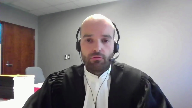

Her Majesty The Queen v. Patrick Dussault
This transcript was made with automated artificial intelligence models and its accuracy has not been verified. Review the original webcast here.
Justice Wagner (00:00:28): Bonjour.
Veuillez vous asseoir, s’il vous plaît.
Alors, dans la cause de Sa Majesté la Reine contre Patrick Dussault, pour la plan de Sa Majesté la Reine, M. Justin Tremblay et M. Isabelle Bouchard, for the Intervener Attorney General of Ontario, David Michael Garg and Natalia Odorico, pour l’intimé Patrick Dussault, M. Celia Hadid et M. Michel Marchand, for the Intervener Criminal Lawyers Association, Anil K. Kapoor and Victoria Chichalivska, pour l’intervenante Association québécoise des avocats et avocates de la défense, M. Mary Springate, pour l’intervenante Association des avocats de la défense de Montréal-Laval-Longueuil, M. Philippe Marcoux, M. Sébastien Saint-Amand, Guinois.
Be warned that there is an ordinance of non-publication and non-diffusion that exists in this case at the level of the lower courts.
Maitre Tremblay ou Maitre Bouchard.
Speaker 1 (00:01:44): Monsieur le juge en chef, je prendrai la parole en premier.
Alors, monsieur le juge en chef, mesdames et messieurs les juges, bonjour.
Le premier dossier permet d’examiner deux questions.
La première est de déterminer si l’intervention de la Cour d’appel sur les conclusions de faits et inférences de la première juge est compatible avec la norme de contrôle applicable.
La deuxième question…
Justice Wagner (00:02:05): Je m’excuse de vous interrompre immédiatement.
J’ai deux petites questions préliminaires à vous demander. Oui.
La première, c’est…
Je constate que la décision du juge Ehrli a été rendue 17 mois après l’audition de la cause en cours d’appel.
Alors, ma question, c’est est-ce qu’il y a eu des demandes de réaudition, est-ce qu’il y a eu des demandes spéciales, il y a eu des incidents qui justifient un tel délai?
Speaker 1 (00:02:36): Écoutez, c’est ma collègue Maitre Bouchard qui était devant la cour d’appel, mais elle m’indique que non, il n’y a pas eu de réaudition ou de demande de précision.
Justice Wagner (00:02:46): Bon.
Deuxième question.
Je comprends qu’il n’y a pas de référence ici de mesures réparatrices du code criminel, indépendamment de la question de la validité de la déclaration de l’accusé.
C’est exact?
Ça peut être soulevé, ça.
Speaker 1 (00:03:06): c’est exact.
On vous entend. Merci.
Alors la deuxième question, comme je le mentionnais, fait référence à l’assistance de l’avocat, au droit à l’assistance de l’avocat.
Est-ce qu’en l’instance, la conduite policière, le comportement des policiers et la séquence des événements pouvaient effectivement laisser raisonnablement croire qu’au terme de la consultation téléphonique de la première consultation téléphonique, l’assistance de l’avocat était complète?
J’aborderai la première question et ma consoeur Maître Bouchard abordera la seconde.
Vous comprendrez que notre position dans la présente affaire était que la Cour d’appel ait non seulement intervenu sur les circonstances et les conclusions et inférences factuelles de la première juge, mais cette intervention est de plus incompatible avec la norme de contrôle applicable.
Ce n’est pas le même scénario qui se déroule en Cour supérieure qu’en Cour d’appel.
En Cour d’appel, on est confronté à des policiers qui s’appuient sur des prétextes, qui font de fausses représentations et qui se concèteraient pour violer le droit à l’assistance de l’avocat, alors qu’en Cour supérieure, nous avons des policiers qui, selon la juge, pouvaient au contraire raisonnablement présumer qu’au terme de la première consultation, le droit à l’assistance de l’avocat était épuisé, était complété.
Et, incidemment, vous comprendrez que…
Justice Wagner (00:04:33): On fait en quelque sorte, le juge a dit, il fait en quelque sorte référence à un procès d’intentions dans les circonstances qui n’étaient pas supportées par la preuve.
Speaker 1 (00:04:43): C’est effectivement notre prétention, monsieur le juge, c’est-à-dire que la Cour d’appel se livre à une réinterprétation de la preuve et déchet qui vient supporter sa thèse ou sa conclusion selon laquelle il y a eu un non-respect du droit constitutionnel de monsieur Dussault d’avoir le droit à l’assistance d’un avocat.
C’est exactement notre prétention.
Au niveau de l’intervention en elle-même, la norme est claire, je n’entends pas le reprendre devant vous aujourd’hui concernant la révision de conclusion de fait.
Contrairement à l’intimé, vous comprendrez que nous sommes également d’avis que la Cour d’appel ne s’est pas limitée à résoudre une question de droit.
En fait, je vais vous inviter à prendre le premier onglet de notre cueillier condensé.
J’ai reproduit à ce premier onglet, nous avons reproduit pardon à ce premier onglet le paragraphe 28 de l’arrêt.
Et j’attirais votre attention sur l’emphase et la nôtre, sur la phrase qui commence par la différence dans le dernier tiers.
Et donc, le juge élit, la Cour d’appel à ce moment-là écrit « la différence entre ces deux conclusions implique non seulement une question de fait, mais aussi une question de droit portant sur l’objet et l’étendue et la phrase se continue.
» Maintenant, la dernière phrase de ce paragraphe, la question de savoir s’il y a eu violation du droit à l’avocat est une question de droit sujette à la révision selon la norme de la décision correcte.
Et donc, dans ce paragraphe, la Cour d’appel paraît elle-même relever que le présent dossier met en cause une question de fait qu’elle identifie même au paragraphe 19 de sa décision et c’est de savoir si à la fin de la première consultation, l’assistance était complète.
Au paragraphe 28, elle identifie la norme applicable à la révision des questions de droit, mais il y aura silence à ce moment-là et dans le reste de l’arrêt sur la norme qui encadre son pouvoir d’intervention relativement aux conclusions de fait.
En dépit de cela, et dans notre mémoire au paragraphe 44 et 45, il y a un exercice plus exhaustif qui est fait pour identifier les interventions factuelles à notre avis.
En fait, ce que nous soutenons avec les interventions factuelles de la Cour d’appel dans les conclusions et inférences de la première juge, mais à mon nom de les deux, j’aimerais attirer votre attention sur trois éléments qui, à notre avis, illustrent ces interventions de la Cour d’appel et les dangers qui peuvent être associés.
En fait, les périls qui sont associés à une intervention qui ne respecterait pas la norme établie par cette Cour.
C’est sous forme de tableau pour mettre en opposition l’arrêt et la décision de la Cour supérieure.
Dans le premier tableau, l’emphase est mise sur la phrase « mais la police a refusé de lui dire qu’il était là ».
À ce moment-là, la Cour d’appel fait référence à la présence de l’avocat et au fait que les policiers auraient refusé de répondre à l’intimé et à l’ordre détenu quant à la présence de son avocat.
Justice Côté (00:07:48): est-ce que sur ce point précis là et je veux juste savoir au niveau des faits bruts alors ici la cour d’appel écrit la police a refusé de lui dire mais est-ce que la preuve n’est pas contredite à l’effet qu’effectivement l’accusé a demandé à quelques reprises si son avocat était arrivé peu importe si elle a le droit d’être là ou pas mais juste au niveau des faits est-ce qu’effectivement dans les faits il n’est pas contesté que l’accusé a demandé à quelques reprises si son avocat était au poste de police
Speaker 1 (00:08:20): Effectivement, il l’a demandé et c’est logique, avec le fait qu’il croyait l’intimé à leur détenu, que son avocat allait être présent pour l’être drogatoire, pour ce qu’il appelle la rencontre. Et
puis, est-ce que les policiers ont reçu la réponse?
Justice Côté (00:08:31): ont répondu à ces questions-là de l’accusé.
Est-ce qu’ils lui ont dit, il n’est pas ici ou il est ici?
Est-ce qu’il y a eu une réponse?
Speaker 1 (00:08:41): Il n’y a pas eu une réponse en fait et c’est ce que le premier exemple sur lequel j’attire votre attention est le, c’est que monsieur Chicoine lors de cette première question de monsieur Dussault utilise cette opportunité pour comprendre parce qu’il faut comprendre qu’il est 20h52.
Overlapping speakers (00:08:58): Mm-hmm.
Speaker 1 (00:08:58): L’avocat n’est plus là à ce moment-là.
Il utilise cette opportunité pour cerner l’état d’esprit de Monsieur Dussault et comprendre qui veut la présence et pourquoi la présence est requise parce qu’avant ça, notre prétention, c’est que l’avocat entretient des ambiguïtés sur la nécessité de sa présence.
Et donc non, il ne lui répond pas spécifiquement, mais d’un autre côté, s’il lui avait répondu spécifiquement à 20h52, il aurait fallu qu’il lui dise non, ton avocat n’est plus là.
Et donc là, il y a un risque à notre avis pour le policier.
Il y a un risque de procéder à un certain dénigrement du travail de l’avocat parce que le client s’attend à ce qu’il soit là, de ce qu’on comprend.
Et donc si le policier lui dit non, ton avocat est parti, eh bien il y a un risque à notre avis et Monsieur Chicoine était dans une position à notre avis plus délicate qu’elle n’est de parrain.
Je ne peux pas.
Justice Côté (00:09:56): Justement,
sur ce danger de dénigrement, vous ne trouvez pas que ça aurait été plus facile pour le policier de dire « il est venu », mais on lui a dit qu’il n’avait pas le droit d’être là.
Speaker 1 (00:10:06): À notre avis
, ça n’aurait pas été une réponse prudente de M. Chikwan parce qu’elle aurait pu laisser penser que le conseil de l’avocat, en fait, parce qu’on infer à ce moment-là que l’avocat va dire, regarde, je vais venir te rencontrer, je viens te rencontrer.
Mais si le policier dit au client, non, il ne peut pas vous dire ça et puis on ne lui donne pas accès.
Encore là, est-ce que ça met un doute sur la qualité du conseil, sur l’assistance?
Comme notre prétention, c’est que M. Chikwan était dans une situation particulièrement délicate tenant en compte des interventions de l’avocat qui entretiennent une ambiguïté sur la nécessité de sa présence.
Et donc, à notre avis, ça n’aurait pas été plus simple et ça aurait été, en fait, ce que je comprends, mais…
Justice Wagner (00:10:48): ce que je comprends, c’est que la présence de l’avocat, l’accusé, il dit, ce n’est pas moi qui l’a demandé, c’est l’avocat qui veut venir me rencontrer.
Speaker 1 (00:10:58): c’est exact.
C’est ce que la preuve démontre, M. le juge, et c’est notre prétention également.
Justice Kasirer (00:11:05): On a lu votre mémoire et on comprend votre point que l’emphase mise sur la conduite policière lors de l’arrêt de la cour d’appel n’est pas ce qu’a fait la première juge.
Acceptons aux fins de la discussion que vous avez raison.
Acceptons que la cour d’appel a mis trop d’emphase et qu’il n’y avait pas de grosse représentation.
Premièrement, vous-même concédez à votre paragraphe 67 que les policiers ont escamoté des questions.
Ce n’était peut-être pas un modèle de quel que soit notre point de vue.
Ce n’est peut-être pas un modèle.
Je me demande si cette dissonance est au coeur du débat devant nous.
Si véritablement ce qui est au coeur du débat devant nous c’est la portée de la consultation téléphonique coupée par la conversation entre M. Chicoine et M. Benoît.
La demande de l’avocat qui reçoit comme réponse « pas de problème » et la lecture différente que vous faites et que l’intimé fait et que la cour d’appel fait de la portée de ceci.
Vous dites qu’il n’y a pas eu d’entente et que l’intimé voit les choses différemment que ça a coupé la consultation et qu’il va plus loin il dit que vous déformez la réalité en plaidant que l’intimé ne voulait pas revoir son avocat et que ça c’est le nœud de l’histoire.
À côté de la question est-ce que oui ou non les policiers, c’est vraiment le coeur de l’histoire.
Je me suis demandé si M. Benoît avait essuyé un refus par le policier plutôt qu’un pas de problème si on lui avait dit non.
Qu’est-ce qui se serait produit?
Est-ce que la consultation se serait continuée au téléphone?
On sait que le policier redonne le téléphone à l’intimé.
Quelle est l’importance de ce pas de problème pour ce qui est de la seule consultation que permet d’iciber en vertu de Saint-Clair?
Speaker 1 (00:13:58): à notre avis il y a un problème si la prémisse factuelle est que lors des 8 ou 9 premières minutes de consultation ce n’était pas complété.
Mais la réalité à notre avis
c’est que les faits ne nous permettent pas d’inférer que l’assistance n’était pas complète ou était insatisfaisante lors des 8 ou 9 premières minutes.
Et donc il faut aussi dire que même si la première fois le policier dit ok pas de problème ou ok ou c’est correct, lorsque face à l’ambiguïté à notre avis posée ou construite par l’avocat qui dit je vais rencontrer mon client sans donner plus d’informations et en fait en mentionnant suspender l’enquête, s’il y avait ambiguïté à ce moment-là, le policier l’a corrigé alors qu’il rappelle l’avocat et là il y a un non catégorique.
Et l’avocat ne saisit pas cette opportunité là pour dire mais écoutez il ne comprend pas, je ne lui ai pas donné ses droits encore, je dois lui reparler, je pensais que j’allais pouvoir le faire en personne, est-ce que je peux le rappeler?
Il n’y a rien de ça.
Et donc l’ambiguïté est encore alimentée par le policier à ce moment-là.
Et donc si on accepte la prémisse factuelle, j’y reviendrai à mon onglet 3 immédiatement ensuite mais à notre avis
c’est lorsque ces 8 ou 9 premières minutes s’écoulent, elle était complète la consultation à ce moment-là et c’est ce que la juge retient et c’est ce que la preuve lors du voir-dire nous rassure à cet effet-là.
Et donc je vous inviterai peut-être immédiatement d’aller à l’onglet 3 de mon condensé parce que je crois que c’est en lien avec votre interrogation M. Jules Cazirère mais c’est aussi de nature je crois à rassurer sur le fait que la consultation était complète avant l’interruption de l’appel à la demande de l’avocat.
À cet onglet j’ai repris, nous avons repris des paragraphes de la décision de la Cour d’appel d’ailleurs, des conclusions factuelles qui à notre avis ont été écartées ou en fait n’ont pas été appréciées, nullement appréciées par la Cour d’appel.
Au paragraphe 169 la juge nous dit nul part l’accusé ne mentionne qu’il ne comprend pas son droit au silence donc on peut en inférer qu’on lui ai expliqué mais en plus au paragraphe 171 la juge nous dit lors de son témoignage l’avocat ne dit pas qu’il n’a pas expliqué le droit au silence car il l’a fait et c’est là qu’on apprend également qu’il a des impressions sur la compréhension de son client, impressions qui ne sont jamais communiquées au policier et que c’est lui-même donc l’avocat qui offre de se déplacer.
Au paragraphe 179, la juge nous dit nul part l’accusé ne mentionne qu’il n’a pas expliqué
Justice Côté (00:16:53): M. Tremblay, sur la question que c’est l’avocat qui a offert de se déplacer, ça n’a pas été une demande de son client, c’est ce que la preuve révèle, mais son client a accepté cette offre, le client a pris pour acquis que son avocat se déplacerait, n’est-ce pas?
Speaker 1 (00:17:09): Effectivement
, mais on ne peut pas demander, et vous comprendrez qu’on ne peut pas demander aux clients de savoir que l’avocat n’a pas en virtu de Sinclair le droit d’être présent lors d’un interrogatoire, mais c’est tout ça qui est important.
Justice Côté (00:17:20): Je ne parle pas de le droit d’être présent lors d’un interrogatoire, je parle que son avocat viendrait au poste de police pour lui donner plus de conseils.
Je ne parle pas de l’interrogatoire lui-même, mais je parle avant que l’interrogatoire commence.
L’accusé était sous l’impression que son avocat se rendrait au poste de police pour lui en dire plus long que ce qu’il lui avait dit au téléphone.
Speaker 1 (00:17:42): avec Égard, je ne crois pas que c’est ce que la preuve, le dossier révèle.
M. Dussault dit, fait des affirmations selon lesquelles son avocat serait là pour la rencontre, qu’il allait être là.
Il est d’ailleurs surpris qu’il ne soit pas là lors de la rencontre.
Donc, il n’est pas question de conseil supplémentaire et en fait, la preuve révèle que M. Benoît voulait faire un cours 101 d’interrogatoire où des techniques d’interrogatoire, ma consoeur abordera cet aspect du dossier, mais donc un objet qui n’est pas l’objet principal de la protection de 10B. Donc
, je ne crois pas qu’il y avait des conseils à compléter ou en fait, la preuve ne le démontre pas.
Madame la juge.
Justice Brown (00:18:22): Maitre, si on accepte que, et je n’accepte pas, mais si on accepte que la consultation requiert seulement une explication du droit au silence, est-ce qu’il n’y a pas encore un problème ici?
A y emmener M. Dussault à croire qu’il aura l’occasion de consulter son avocat de nouveau, est-ce qu’il est ouvert à la police de changer unilatéralement d’avis et bloquer la consultation sans explication comme ici?
Speaker 1 (00:19:24): Bien écoutez, je vous dirais que dans un premier temps, si l’avocat laisse penser lors de sa consultation téléphonique qu’il peut se présenter et qu’il laisse lui-même planer un doute dans l’esprit de son client à l’effet qu’il pourrait être là lors de l’interrogatoire, lors de la rencontre, les policiers ne peuvent rien faire pour ça.
Et si les policiers n’ont jamais laissé penser à l’intimé détenu qu’il aurait une consultation avec son avocat, de même, il n’y a aucune circonstance émanant, aucun fait émanant de l’intimé détenu à ce moment-là qui laissait croire que les circonstances dans lesquelles ils se trouvaient ont changé qu’une seconde consultation devait avoir lieu.
Et donc, si l’avocat décide de mettre fin à la consultation après avoir dit ce qu’il avait à dire, il commet peut-être une imprudence parce que ce qui est important ici, c’est de savoir et c’est de comprendre que ce ne sont pas les policiers qui ont mis fin à la consultation, c’est l’avocat ou le monsieur Dussault qui raccroche.
Et donc, on ne peut pas imputer aux policiers l’action positive d’avoir suspendu la consultation, mais on doit laisser croire à monsieur Dussault qu’il y aurait une deuxième consultation.
Justice Brown (00:20:48): Mais si l’avocat a effectivement informé l’intimé de ceci après que la police a confirmé qu’il pourrait le faire, oui?
Speaker 1 (00:20:59): Je ne suis pas certain.
Ce que je sais, c’est que la preuve démontre que l’avocat offre à son client de se présenter, le client accepte.
Mais dans l’esprit du client, ce qui ressort la preuve, c’est qu’il croyait qu’il allait être là pour l’interrogatoire.
Et donc, comme je le mentionnais, cette ambiguïté qui émane du discours de l’avocat, les policiers étaient dans une situation délicate pour la corriger.
Et s’il y avait un doute sur la qualité ou l’assistance adéquate de l’avocat, M. Benoît a eu trois opportunités de se manifester pour dire il y a un problème ici.
Il y a un problème.
Il ne l’a jamais fait.
En fait, la seule fois qu’il l’a fait…
Justice Brown (00:21:49): J’ai laissé un note dans laquelle il a écrit que la consultation n’était pas complète.
Speaker 1 (00:21:56): Il dit, j’ai partiellement, l’assistante de l’avocat a été faite partiellement effectivement, mais en tout respect, pour nous, ça ne veut pas dire grand-chose.
Il raffaire la situation à lui.
Le droit à l’assistante de l’avocat est partiellement complété, mais ça ne veut pas dire grand-chose.
Justice Wagner (00:22:14): Nous ne disons rien.
De toute façon, dans son interrogatoire, Maître Benoît, il explique très bien que la raison pour laquelle il offre à son client d’aller le rencontrer, c’est parce qu’il ne communique pas assez avec lui et il a l’impression qu’il ne comprend pas nécessairement ce que ça veut dire le droit au silence et les conseils qu’il donne.
C’est ça qui explique Maître Benoît.
Speaker 1 (00:22:34): Exact
, il l’explique à la postériorie
puis il dira ce qu’il me manquait à compléter
, c’est les techniques d’interrogatoire parce que, et je terminerai là-dessus, mais les paragraphes 187 et 188 à notre avis sont déterminants à l’onglet 3.
À 187, la juge de première instance nous dit « le tribunal est également convaincu que Maître Benoît a bien expliqué à l’accusé son droit au silence et que ce dernier a compris ses propos.
» À 188, et c’est important, il ressort de la preuve que l’accusé comprenait ses droits et qu’il l’a exercé de façon stratégique lors de l’interrogatoire et donc à notre avis, il est incompatible en fait de dire « l’assistance n’était pas complète » si dans les faits, le tribunal chargé de la découverte de ces fameux faits, de ces faits-là, estime que non seulement il y a une compréhension du droit en cause, mais un usage stratégique de surcroît.
Et donc à notre avis, en tout respect, l’intervention de la Cour d’appel ne respecte pas la norme, elle s’est livrée une réinterprétation des circonstances qui sert le dispositif, qui sert ses conclusions à l’effet qu’il y a une violation du droit en cause et que la déclaration devrait être exclue.
À moins qu’il n’y ait des questions, c’est que j’en ai une.
Justice Wagner (00:23:44): à moins qu’effectivement l’étendue de l’obligation sous 10B soit différente.
Dans d’autres mots, là vous dites le tribunal était convaincu, l’accusé était convaincu de comprendre les conseils de son avocat et c’est ça l’obligation a été remplie.
Maintenant, je pose la question, si l’obligation de consulter le 10B et le droit au silence englobe plus que ça, est-ce qu’il n’y a pas un argument à faire à la fait que potentiellement, effectivement, la consultation n’était pas complétée si, effectivement, ce n’est pas limité à ce que je vous dirais, disons traditionnellement, on considère être le droit de consultation de l’avocat.
Speaker 1 (00:24:29): est-ce qu’il y a une révision de l’étendue du droit?
Si on va plus loin que ce que Sainte-Claire MacRumman ou Villiers nous disent notamment, il y aurait pu y avoir un problème.
Mais dans les faits, il n’y en a pas même si on considère que l’étendue est plus large parce que dans les faits, il n’en demeure pas moins que les policiers, l’État n’a jamais été informé que ce soit de la part de l’intimé ou de son avocat d’une assistance inadéquate insuffisante.
Le fait de dire l’assistance est partielle, ça ne suffit pas.
Et ça ne suffit certainement pas lorsque les policiers dans la situation délicate dans laquelle ils se trouvent, ils essaient de soutirer des informations à M. Dussault et que ce dernier dit, non c’est l’avocat qui voulait être là et que lui dit tout est beau, comprenez?
Et donc on ne peut pas demander aux policiers, ma consœur l’abordera plus en détail cette question-là, on ne peut pas demander aux policiers de s’ingérer dans la relation privilégiée qui existe avec l’avocat et le client pour comprendre qu’est-ce qui s’est dit, est-ce que c’est suffisant, est-ce que ça correspond à l’étendue du droit, ça prend et le test, en fait ma consœur
vous demandera d’appliquer le droit qui existe en ce moment, mais s’il n’y a pas de changement dans les circonstances qui laissent croire que la situation du détenu requiert une seconde consultation, une assistance complétée, peu importe comment on l’appelle, on a satisfait à l’obligation constitutrice des Donkarts.
Justice Kasirer (00:25:59): Est-ce que je peux juste faire suite à la question du juge en chef, parce que je la trouve bonne.
L’idée que le droit au disque-bé, je ne parle pas d’une seconde consultation.
Lors de la première consultation, dont parle Saint-Clair, devrait permettre, c’est un droit à l’assistance de l’avocat, ce n’est pas juste un droit au silence, un droit à l’assistance de l’avocat, Retain and Instruct Council, que ceci, dans les faits qui nous intéressent, comporte des indications à l’intimé qu’il avait un choix utile à faire, de coopérer ou non à l’enquête.
Et donc, quand M. Benoît parle, j’aurais aimé lui expliquer les techniques d’interrogation pour qu’il se protège en quelque sorte son droit de choisir utilement, oui ou non, de coopérer à l’enquête.
Et je ne l’ai pas fait, ou je ne l’ai fait que partiellement, comme dit la note.
Est-ce que, à votre avis, la juge de première instance s’est attardée sur ça, au paragraphe 187 et 188, quand elle semble limiter ses propos au droit au silence?
Speaker 1 (00:27:21): La difficulté, et je me rapporte encore au fait, c’est que maître Benoît, la première fois où on entend parler de ses impressions, la première fois où on entend parler de ce qu’il devait compléter, c’est lors du voir-dire.
Donc, on ne peut pas demander aux policiers…
Overlapping speakers (00:27:35): Oui mais il y avait un secret professionnel quand même, il n’allait pas tout déclarer aux policiers là, voyons.
Speaker 1 (00:27:42): C’est pas ça que je dis monsieur le juge, ce que je dis c’est que si l’avocat constate que son client ne comprend pas, a besoin d’une assistance supplémentaire, à mon avis
il ne commet pas de fautes professionnelles déontologiques, s’il dit au policier écoutez je suis confronté à un individu qui ne comprend pas, j’ai l’impression qu’il ne comprend pas, je me déplace au poste pour lui expliquer ses droits, l’avocat a une responsabilité à notre avis et donc il y a une limite où en fait il y a un point où peut se rendre l’avocat pour s’assurer de bien faire son travail et la faute déontologique ou le bris du secret professionnel parce qu’ici on apprend tous ces éléments là uniquement du voir-dire il nous apparaît incorrect de juger ou un peu injuste, inéquitable de juger le comportement des policiers à partir d’éléments qu’il n’avait pas.
Justice Côté (00:28:27): Et au paragraphe 153, la juge de première instance dit que l’avocat parle au policier et lui dit qu’il vient rencontrer monsieur.
Il lui demande de suspendre l’enquête, le policier lui aurait répondu « pas de trouble ».
Alors, c’est une première indication que l’avocat veut faire quelque chose, veut compléter quelque chose.
Et le sergent détective lui dit « pas de trouble ».
Au paragraphe 136, après que le sergent a dit « pas de trouble », si vous allez au paragraphe 136 de la décision de la première juge, l’accusé reprend le récepteur.
L’avocat lui dit « ne bouge pas, je viens te rencontrer, ne parle à personne, arrête cela ».
Il comprend qu’il ne doit pas parler des événements.
Cet appel rassure l’accusé, il croit que maître Benoît viendra le rencontrer.
Alors, quand vous dites que c’est seulement au voir dire que l’avocat a exprimé qu’il y avait quelque chose qui devait être complété, dès la conversation téléphonique avec le sergent détective, il dit « je vais y aller ».
Et le sergent lui dit « pas de problème », et l’avocat informe son client « ne bouge pas, j’arrive ».
Et effectivement, il est arrivé, mais il n’a jamais été mis au courant que son avocat était arrivé.
Speaker 1 (00:29:42): Effectivement, mais cet indice-là, pour nous, ne mène pas à la conclusion inexorable que la première consultation ou l’échange de huit ou neuf minutes n’était pas satisfaisant, était incomplet.
C’est ça la prémisse.
Il faut, pour que cet indice oblige une seconde consultation, il faudra accepter la prémisse que pendant les huit ou neuf premières minutes, il ne s’est rien passé d’utile ou qu’il y avait rapport à la visibilité.
Et ce n’est que la preuve des mondes.
Justice Côté (00:30:07): vous dîtes pour que ça soit, ça indique qu’il y a besoin d’une seconde consultation, mais pourquoi ça indiquerait pas que la première consultation n’est pas complétée?
C’est pourquoi le policier dit pas de trouble, venez-vous-en.
Si c’était complété.
Speaker 1 (00:30:25): Le policier se dit surpris.
Compte tenu de la gravité des accusations, je vais venir le rencontrer en personne, suspendé toute enquête.
Il y a une ambiguïté sur la raison de cette présence-là.
Et s’il y avait une ambiguïté, le policier la corrige lors du deuxième appel et dit «
vous ne pourrez pas le rencontrer ».
L’avocat, à ce moment-là, ne saisit pas l’opportunité de dire « mais attendez un instant, ce n’est pas ce que j’avais compris, moi mon client j’ai des informations à lui donner encore ».
Au contraire, l’avocat se montre intimidant et arrogant, selon le témoignage du policier, et lorsqu’il arrive au poste, encore une fois, il laisse planer l’ambiguïté parce qu’il dit « j’ai partiellement fait le droit à l’avocat ».
Et ça, à notre avis, ce n’est pas davantage un indice objectif qui laisse croire qu’il y a un changement dans les circonstances du détenu, particulièrement lorsque ce dernier dit « c’est l’avocat qui voulait être là, c’est lui qui l’offre, c’est lui qui voulait être là, moi tout est beau, et puis il voulait être là pour la rencontre ».
Et donc l’avocat, ici, alimente des ambiguïtés dans l’esprit de son client, et à notre avis, on ne peut pas utiliser ces ambiguïtés-là pour dire « les policiers ont mal agi et ont brimé le droit constitutionnel du client ».
Et avec votre permission, M. Jean-Chef, j’aimerais céder la parole à ma grosse soeur.
Justice Wagner (00:31:39): La parole est à la ministre de l’Intérieur.
Speaker 2 (00:31:42): Oui, bonjour, merci de me tremblez, bonjour M. le juge en chef, mesdames, messieurs les juges, bonjour, écoutez, plusieurs des points que je voulais aborder ont été abordés par mon collègue suite à nombreuses de vos questions, mais j’aimerais revenir peut-être sur trois points importants.
Premièrement, l’étendue de la protection constitutionnelle prévue à 10B. Et je crois, c’est vous, M. le juge en chef, qui en a fait référence dans une de vos questions.
À l’heure actuelle, en droit canadien, depuis évidemment la trilogie rendue par cette Cour en 2010, les juges majoritaires de cette Cour ont évidemment établi la portée de cet objet-là.
Et au paragraphe 30 et 31 de l’arrêt Saint-Clair, les juges majoritaires réfutent la position des juges minoritaires, soit des juges Lebel et Fish qui siège à cette Cour à l’époque, à savoir que la protection de 10B était plus large, c’est-à-dire qu’il fallait informer la personne détenue de la façon de réagir aux questions posées par la police.
Cette thèse était acceptée par les juges minoritaires, mais elle a été réfutée par la majorité de cette Cour en disant qu’on ne pouvait pas accepter de voir cette façon-là des choses, qu’évidemment la protection constitutionnelle de 10B était évidemment d’expliquer les droits à l’accusé.
Et justement, vous avez fait référence, M. le juge Casirard, au fait de « console and instruct » et sur cette définition-là, cet honorable Cour dans l’arrêt Saint-Clair est venu établir que ça n’incluait pas les techniques policières d’interrogatoire, de comment se comporter, etc.
C’est le premier point que je voulais aborder avec vous ici.
Deuxième chose, quels sont les éléments de preuve qu’il faut considérer lorsqu’on est, par exemple, le juge de première instance et ou lorsqu’on a déterminé une violation en vertu de 10B?
Est-ce que c’est la preuve qui s’est déroulée devant les yeux des policiers dans la détention le soir de l’arrestation de M. Dussault?
Ou c’est la preuve à post-théorie, au voir
-dire lorsque M. Dussault se disait non satisfait des conseils reçus lors de son entretien téléphonique?
Laquelle de ces situations?
Est-ce que c’est la preuve au voir
-dire où M. Benoît vient nous dire pour la première fois le contenu de ses échanges avec M. Dussault?
Ou c’est le comportement de l’accusé lors de ses appels, les paroles qu’il va prononcer alors qu’il attend son avocat pour la rencontre avec les policiers?
À plusieurs reprises, les policiers suivent M. Dussault évidemment tout au long de sa détention.
Suite au premier appel initial, il lui pose la question, tout est beau, oui c’est correct, il s’en va en détention.
Il fait plusieurs demandes aux policiers qui supervisent sa garde, des cigarettes, comment va sa conjointe, etc.
Aucune, et surtout la question, quand est-ce que mon avocat arrive?
Et à ce moment-là, on lui demande, Patrick, est-ce que tu veux qu’il soit là?
Réponse de M. Dussault, non, c’est lui qui m’a dit qu’il serait là lors de l’entrevue.
Et évidemment, ce côté-là, je pense que c’est un honorable cours du droit à l’accompagnement, à l’assistance continue de l’avocat au sein d’un poste de police, comme nos voisins américains ont le Mirandah Rule, n’est pas accepté par cette cour encore au Canada.
Donc, et le droit, donc l’objet, je reviens à l’objet de la protection de DSB de la Charte, est bel et bien une consultation téléphonique où un individu détenu qui se voit arrêté par l’État se voit conseillé, à savoir, pour qu’il fasse le choix ultime de collaborer ou non avec les policiers lors de l’enquête.
Donc, c’était les deux premiers points.
Et le troisième point…
Merci, M. le Président.
Justice Kasirer (00:35:27): Avant d’aller plus, je veux juste comprendre, la fameuse contradiction, mon collègue le juge Brown a évoqué la note qu’avait laissée l’avocat Benoît et la juge de première instance, à son paragraphe 174, retient qu’il y a une contradiction entre le témoignage de Maître Benoît lors du voir-dire et le contenu de la note.

En laissant entendre que lors du voir-dire, il mettait l’emphase sur l’incompréhension de l’intimé de ses droits, tandis que dans la note, ça serait que les droits, enfin l’assistance de l’avocat n’a pas été complètement assurée, en quelque sorte.
Qu’en dites-vous?
La Cour d’appel ne parle pas de cette contradiction.
La juge de première instance met beaucoup d’emphase là-dessus.
Est-ce qu’il y a véritablement une contradiction entre les deux?
Parce que c’est une autre façon de poser la question, quel est le contenu de dissiper dans un sens?
Qu’en dites-vous?
Speaker 2 (00:36:37): Oui, je suis d’accord avec vous, M. Jusqu’à-Zeran.
Pour répondre à votre question, au moment de l’interrogatoire de Maître Benoît lors du Vardier, évidemment en interrogatoire principal, Maître Benoît viendra expliquer les circonstances de la rédaction de cette note et dans les circonstances qu’il a déposées à 18h30 au poste de police, soit trois heures et demie après son appel initial avec son client.
Au moment où évidemment il rend en interrogatoire principal, il va venir décrire aux questions qui lui sont posées les circonstances et les réponses de son client lorsqu’il a la consultation initiale et il viendra expliquer les circonstances de la rédaction.
Par contre, en compte interrogatoire, lorsqu’on décortique avec lui quels sont les droits qui ont été faits lors de l’entretien initial au téléphone, Benoît dira qu’il a rempli ses obligations déontologiques, à savoir qu’il a expliqué les droits à son client, mais ce qui lui manquait, c’est les techniques d’interrogatoire.
Donc, lorsqu’il est confronté à cette note, et je pense que c’est sur cette contradiction-là que la juge, l’honorable juge du Salvo va exposer ce point-là dans son jugement, c’est au niveau de, eh bien, compte tenu que la protection constitutionnelle ne comprend pas cet élément, mais les droits étaient complets.
Il est venu me le dire qu’il avait exposé la situation comme il faut à son client.
Il avait des impressions, il ne les a jamais communiquées aux policiers.
Il avait une sensation, un sentiment, il ne les a jamais dit aux policiers, aux personnes qui sont là, responsables pour recueillir les faits objectifs observables lors de la détention d’un détenu.
Et, comme vous le savez évidemment, et je prends l’exemple de M. Dussault, tout au long de sa détention, évidemment, il y a une enquête policière qui est en cours.
On saura lors de son interrogatoire que, bon, sa conjointe a été rencontrée, etc.
Les policiers travaillent au niveau de l’enquête policière pour résoudre un crime de meurtre, une meurtre d’une âme âgée.
Mais en même temps, les policiers font une enquête sur le droit à l’assistance de l’avocat de M. Dussault.
Du moment où il prend contact avec un avocat qu’il ne connaît pas, qui est M. Jean-François Benoît, jusqu’à temps qu’il passera aux aveux un peu plus tard en soirée, ils sont soucieux de son droit à l’avocat.
Ils vont lui demander par des questions qui ne peuvent rentrer évidemment dans le secret professionnel de l’avocat client.
Donc, le spectre pour un policier qui a sous garde un détenu, qui à la fois doit évidemment faire respecter son droit à l’avocat, est très mince.
Et ici, ce que l’intimé a réussi à faire à la cour d’appel et tente encore devant cette cour, c’est de dire, mais les policiers auraient dû savoir que la première communication était incomplète parce que M. Benoît avait ces impressions ci, ces impressions ci, etc.
Les policiers ne pouvaient pas le savoir.
Et le troisième point, je vais enchaîner là-dessus pour compléter ma trop longue réponse, je m’excuse, mais c’est jusqu’à zéro votre question, c’est qui doit dicter le droit à l’avocat, le droit à l’assistance à l’avocat au Canada?
Est-ce que c’est le client, comme vous l’avez décidé dans votre trilogie de 2010, c’est-à-dire que les policiers l’observent, regardent ses comportements, ce qu’il va le dire par rapport au conseil reçu?
Comment aussi va l’exercer son droit au silence?
Et ça, je fais une parenthèse importante ici.
En aucun temps dans le jugement de la cour d’appel, on prend en considération comment Patrick Dussault utilise de façon stratégique son droit au silence dans son interrogatoire de police.
Il choisira de parler des sujets comme sa conjointe, etc.
Et ce n’est que quand il est confronté évidemment aux éléments très incriminants de l’enquête, qu’il passera aux aveux à savoir que la victime lui devait de l’argent et que le meurtre s’est passé dans sa salle de lavage à sa résidence.
Je ferme cette parenthèse et je reviens à ma question principale.
Est-ce qu’on change la façon de voir les choses?
Est-ce qu’on met de côté les principes de Sainte-Claire, à savoir que les policiers doivent détecter des faits objectivement observables, que la personne détenue n’a pas reçu des conseils complets ou il y a un changement de circonstance qui nécessiterait une deuxième consultation?
Ici, je ne veux pas jouer sur les mots.
Je pense que c’est vous tout à l’heure, M. Judge Brown, qui en faisait allusion.
Une conversation interrompue ou un entretien qui doit se compléter versus une deuxième consultation.
Je pense qu’ici, on doit se poser la question, est-ce que les conseils sont satisfaisants ou complets dans les circonstances?
Je pense que c’est ça la véritable question et quand les policiers Chicoine et les autres policiers observent M. Dussault le soir du 28 août 2013, ils n’ont rien qui s’est porté à leur connaissance et à chaque fois qu’il y a un fait, ils vont enquêter là-dessus, ils vont faire des vérifications, ils vont poser des questions à M. Dussault pour voir la satisfaction qu’il a par rapport au conseil reçu et la seule réponse qu’il reçoit, c’est mon avocat voulait être là, évidemment, à mon entrevue de police.
Et ça, je terminerai là-dessus, honorable juge, la présence continue, l’assistance au poste de police continue au Canada par un avocat n’est pas reconnue par cette Cour, contrairement à d’autres pays.
Et je pense qu’ici, l’intimé tente évidemment avec la preuve qu’il a présentée, avec le jugement de la Cour d’appel, de dire que M. Benoît, parce qu’il l’a demandé, parce qu’il s’est présenté au poste de police, on doit absolument y faire rencontrer son client.
Quand la question n’est pas du tout ça, la question était le soir du 28 août 2013, est-ce que M. Dussault était satisfait des conseils qu’il avait reçus?
Les a-t-il utilisés stratégiquement, intelligemment?
Et la réponse que la plante vous soumet respectivement, c’est que oui.
Et pour toutes ces raisons, c’est pourquoi nous vous demandons évidemment d’accueillir notre appel, de rétablir le verdict de culpabilité de meurtre au deuxième degré rendu par le jury le 26 octobre 2016 et rétablir évidemment la peine de perpétuité sans possibilité de libération continuelle avant 12 ans pour l’intimé M. Patrick Dussault.
Je vous remercie beaucoup.
Justice Wagner (00:42:45): J’aurais peut-être une dernière question qui est peut-être redondante, mais qui fait suite à la question de mon collègue, un collègue assez rare.
Si on veut cerner l’étendue, parce que vous avez parlé de Sainte-Claire, il y avait l’opinion minoritaire du juge Fish dans le dossier qui voulait étendre l’obligation, la majorité a rejeté cette prétention-là.
Alors, si je vous pose la question, est-ce qu’on peut cerner l’étendue de cette obligation-là?
Quand est-ce que l’obligation ou le droit d’assistance de l’avocat est satisfait?
Speaker 2 (00:43:24): Et moi
, je pense que comme vous l’avez indiqué dans Sainte-Claire, dans Willier et dans McCrimmon, on doit donner des conseils à une personne détenue pour qu’elle fasse le choix éclairé de collaborer ou pas à une enquête policière.
Pas nécessairement la façon dont elle doit répondre aux questions.
On doit lui expliquer c’est quoi le droit au silence, c’est quoi les impacts de celui-ci.
Donc, on ne pourra pas retenir que tu ne parles pas devant les tribunaux, etc.
On doit évidemment, d’une part, évidemment on oublie ce qui vient avant le droit au silence.
L’avancée de la défense doit s’assurer évidemment que l’accusé comprend de quoi il est accusé, quelles sont les conséquences, etc.
Évidemment, il y a tout aussi cet aspect-là de voir si l’accusé comprend, s’il sait à quoi il fait face, si son état mental, je veux dire, on, je vais parler pour moi, mais souvent lorsqu’on encadre des enquêtes de meurtre, on va avoir des policiers qui vont nous appeler en nous disant « Maître, on a un individu vraiment qui présente un état mental particulier, son avocat vient de nous appeler, il est inquiet de la situation, etc. » Donc, il faut s’assurer de tout ça.
Donc, le conseil que l’avocat doit donner dans le cadre de 10B est d’amener son client à faire ce choix-là, de collaborer ou non.
Évidemment aussi, lorsqu’il a des indices précis, et ce n’est pas le cas de M. Dussault, mais ça pourrait l’être lorsque les policiers, par exemple, veulent appliquer, par exemple, un mandat d’ADN où on doit donner le droit à l’avocat en individu, de lui expliquer les tenants et aboutissants de la technique qui sera utilisée, qu’est-ce qu’on peut faire avec ça, etc. Donc, de lui expliquer pour rétablir cette balance-là de l’individu qui est détenu vis-à-vis de l’État et l’avocat de la défense vient évidemment expliquer la situation pour que l’accusé puisse prendre ce choix éclairé-là.
Overlapping speakers (00:45:12): Thank you.
Speaker 2 (00:45:12): Ça ne va pas jusqu’à lui faire quasiment, je vais reprendre l’expression qui a été dite en première instance, un cours en un d’interrogatoire de police.
Je pense qu’ici ce n’est pas le cas et ça ne devrait pas être l’étendue de la protection de 10B pour une personne qui est détenue dans un poste de police.
Justice Wagner (00:45:32): J’ai une dernière question.
Dans l’éventualité où on donne raison à l’intimer dans le dossier, est-ce que la preuve qui résulte de la déclaration de l’accusé lors de son interrogatoire devrait être exclu en vertu de l’article 24.2?
Speaker 2 (00:45:52): Oui, comme nous l’avons soutenu à l’Accord d’appel du Québec, je crois qu’ici, il est indéniable que cette preuve devra être excrute.
Je vous remercie.
Ça fait plaisir.
Justice Wagner (00:46:05): prendre sa pause du matin à 15 minutes. Merci.
Speaker 3 (00:46:49): La cour de court!
Justice Wagner (00:47:10): Thank you.
Please be seated.
Speaker 4 (00:47:18): Thank you Chief Justice.
Good morning justices.
On behalf of the Attorney General of Ontario, my submission for today is that there is no need for drastic changes to 10b law, specifically in regards to the time frame at issue in this case, which is the point after which a detainee has begun consulting with Council.
A bridge can be built across this court’s jurisprudence to provide police with one test to apply on when their implementational duties renew while maintaining Canada’s leadership in equipping individuals with robust protections throughout their dealings with police.
It’s helpful to start by looking at how the Quebec Court of Appeal framed the issue in this case, which was to ask is this the case where police needed to allow the consultation to continue in order to be complete or is this a case where police needed to allow reconsultation with Council?
Our proposal is to merge these two questions into one by reading this court’s jurisprudence as providing one test in the following manner.
When police believe the detainee is consulting with Council, they facilitate the opportunity for the detainee to receive legal advice on their rights and obligations including the right to silence and police can assume that the detainee received that legal advice.
Advice relevant to their choice on whether to cooperate with the investigation.
This assumption is the key because police implementational duties renew whenever objective indicators would cause this assumption to crumble.
To illustrate, say a detainee gets off the phone with Council and 15 minutes go by and he tells the police, hey I don’t know what happened there I was on the phone with the lawyer and mid-sentence the line got cut.
Police should not be trying to figure out whether this means the consultation was incomplete or inadequate or insufficient as though those are three separate standards.
Instead, the detainee was diligent in conveying a problem and the question the police must ask is whether they can still assume that the detainee had the opportunity to receive information relevant to his choice on whether to cooperate.
We can see that from Bartle into Wilier and Sinclair.
Justice Rowe (00:49:49): He just said the magic word, opportunity, because there’s a difference between saying the police must ensure there’s an opportunity versus somehow assuring a particular content or adequacy, which is really sort of what’s been suggested to us by others.
Speaker 4 (00:50:14): Yes Justice Roe, that is the thrust of our submission is that 10b can only impose obligations on the state.
That’s right in section 32 of the charter and long-standing in this court’s jurisprudence.
So a 10b approach must keep obligations and decisions on the state which will normally be the police in these circumstances.
They are the ones required to discharge informational and implementational duties.
That was made explicit by Chief Justice Le Maire in Bartol.
Police are not in a position to determine whether a consultation was effective or adequate and 10b imposes no duty on them to do so.
Instead the framework must keep the analysis focused on factors within their knowledge and decisions within their control.
My final point is that is going back to why this this there’s only one test on when police implementational duties renew is is to keep the framework simple.
This court recognized in Subaru that a workable 10b framework means providing police with stable well-defined routes to implementing rights to counsel.
10b law is already quite complex.
Police need to navigate a multifaceted decision tree to get to the point of putting a detainee on the phone with counsel.
And so when we’re now at that point where the detainee is is consulting a workable framework means keeping the additional decisions to a minimum.
Subject to any questions those are our respectful submissions.
Thank you very much.
Justice Wagner (00:51:57): You
Overlapping speakers (00:51:57): adide
Justice Wagner (00:51:57): Please.
Thank you.
Speaker 5 (00:52:35): Monsieur le juge en chef, mesdames et messieurs les juges, bonjour.
Alors, quant à la norme d’intervention, je vous suggère de commencer évidemment par la première question de la plante qui prétend que la Cour d’appel est intervenue sur des questions de fait alors qu’elle n’en avait pas le droit, tandis que l’intimé soutient pour sa part qu’il s’agissait d’une question de droit soumise à la norme de la décision correcte.
Il est opportun de commencer par analyser le jugement de première instance puisque c’est la base de ce qui a été décidé dans les faits.
Essentiellement, comme certains d’entre vous l’ont relevé, la juge de première instance ne rejette pas qu’il y ait eu suspension des conseils à proprement parler.
Au contraire, elle laisse à comprendre qu’il y a effectivement eu un « ok, pas de troubles » de monsieur Chikwan et donc une expectative de se voir.
Et ça, c’est le cœur de l’affaire.
D’ailleurs, même la plante ce matin vous plaidait ceci.
Pour elle, le fait qu’il y ait eu suspension du contact n’a aucune incidence juridique.
Pour elle, il suffisait de considérer ce qui a été dit dans les 8 premières minutes de consultation, 9 premières minutes plutôt, pour constater que les conseils étaient suffisants.
La position de l’intimé est à l’effet que d’abord vous devez prendre ce fait pour avérer.
La suspension de la consultation et l’expectative entre l’avocat et l’intimé de se rencontrer au poste de police, de continuer la discussion, c’est un fait qui a été retenu par la juge de première instance, de même que par la cour d’appel.
Justice Wagner (00:54:03): Maître,
est-ce que vous nous demandez aujourd’hui de changer le test de Sinclair?
Overlapping speakers (00:54:08): Absolument pas, absolument pas.
Justice Wagner (00:54:10): Vous êtes d’accord à le fait que l’obligation ou l’étendue de la consultation est limitée?
On ne va pas demander à la vocation d’expliquer les différentes techniques policières puis s’allonger là-dessus.
Vous êtes d’accord avec ça?
Speaker 5 (00:54:26): En fait, ce que Sainte-Claire dit, la règle principale de Sainte-Claire, c’est qu’on présume qu’un appel est suffisant pour venir, pour venir, en fait, pour pouvoir exercer le droit à la vocation, pour avoir l’assistance qui est suffisante.
La majorité dans Sainte-Claire nie que la présence de l’avocat pendant l’interrogatoire soit un droit au Canada.
Et pour ce qui est de la dissidence, dans Sainte-Claire, je vous suggère de l’aborder d’ailleurs.
Pour ce qui est du juge Beeney, alors le juge Beeney a une position un petit peu mitoyenne dans ce sens qu’il ne considère pas qu’un seul appel est généralement suffisant, mais suggère un test qui permettrait aux policiers et aux détenus de pouvoir faire renaître l’obligation d’assistance de l’avocat pour avoir d’autres consultations.
Tandis que les juges Fish et Lebel parlaient plutôt d’une assistance qui est continue tout au long de l’interrogatoire sans nécessairement que l’avocat soit présent au poste de police.
Donc la décision de Sainte-Claire, c’est l’état du droit actuel, la position de la majorité.
Par contre, Sainte-Claire ne dit jamais que le droit à l’assistance d’un avocat est limité simplement au droit au silence, à dire aux détenus qu’il a le droit de garder le silence.
Sainte-Claire mentionne que les conseils doivent permettre de faire un choix éclairé dans le rapport avec la police.
Ils doivent permettre de faire un choix utile pour ce qui est de coopérer ou non à l’enquête.
Que les conseils puissent permettre à l’accusé d’obtenir les conseils dont il a besoin pour exercer son droit de choisir des conseils propres à sa situation juridique.
Justice Wagner (00:56:03): pour vérifier ça, évidemment, on se retrouve dans ces situations-là, dans une drôle d’opposition parce que si on se place au moment où l’avocat donne ses conseils à l’accusé ou l’inculpé, évidemment c’est confidentiel.
Donc, il s’est juste entre l’avocat et l’accusé.
Les policiers ne savent pas.
Lorsqu’il y a une requête comme on est saisie présentement, c’est à ce moment-là où on peut, pour la première fois, lors d’un voir-dire, apprendre qu’est-ce qui s’est dit puis pourquoi effectivement un pense que la consultation est complète et l’autre ne le pense pas.
Et ce que j’ai compris dans ce dossier-ci, c’est que cette preuve-là au voir
-dire indiquait que l’accusé non seulement comprenait les instructions, les conseils de son avocat, mais les a appliqués en décidant dans certains cas de répondre, dans d’autres circonstances de dire « bien là, moi j’ai droit au silence, je ne veux pas vous répondre » et que c’est l’avocat qui voulait rencontrer l’accusé, non pas l’inverse.
Speaker 5 (00:57:09): En fait, il y a plusieurs sous-questions dans votre question.
La première, c’est la situation peut être divisée en deux.
La première partie, c’est le fameux «
Ok, pas de trouble » du sergent détective Chikwan qui a occasionné une suspension.
Dans Sainte-Claire, on parle des indices qui sont nécessaires pour la deuxième, troisième ou un nombre X de consultation supplémentaire lorsque nécessaire.
Mais là, on est encore dans la première consultation.
Et pour ce qui est de la première consultation, il n’y a pas de décision qui délimite ce qui doit être dit ou non.
Dans Sainte-Claire, on indique qu’il est raisonnable d’estimer que l’expression « retain and instruct » et son équivalent français suppose plus qu’une consultation superficielle.
On indique spécifiquement que les conseils doivent être suffisamment larges pour permettre à l’individu de faire un choix.
Donc, je vous disais que la situation, pour répondre à votre question, était divisée en deux. Alors
, le « Ok » du policier qui a engendré finalement tout le reste de la situation.
Et ensuite, de se demander, et dans cette perspective-là, peu importe ce qui a déjà été dit ou non à l’avocat, la première consultation n’était pas terminée.
Et vous le soulevez à juste titre, la consultation est privilégiée.
Elle est confidentielle.
Les policiers ne peuvent pas s’en mêler.
Et ça, c’est un corollaire, c’est qu’ils ne peuvent pas intervenir non plus dans le type de conseil qui est donné.
Lorsqu’il y a une première consultation qui est inachevée, on ne peut pas se mettre à regarder ce qui a été dit dans les neuf minutes et dire « bon, ça c’est correct, ça c’est suffisant », et donc passer outre la suspension elle-même.
Il y a l’autonomie, le corollaire de tout ça va vraiment être l’autonomie de l’avocat, qui est un officier de justice qui a la connaissance et l’expérience suffisantes pour pouvoir donner des conseils à son client afin qu’il puisse faire ce choix.
Parce que l’objet de 10B, c’est bel et bien de rétablir l’équilibre entre l’État et l’individu qui a des libertés constitutionnalisées.
Et le deuxième pan de votre question, c’est à ce moment-là, l’étendue du droit à l’avocat.
Donc l’étendue du droit à l’avocat.
Maître Benoît mentionne qu’il a dit à son client qu’il pouvait garder le silence et qu’il s’est un peu cantonné, si on veut, à la chanson policière « vous avez le droit de garder le silence, tout ce que diras pourra être retenu contre vous ».
Mais il manque trois choses principales.
D’une part, il explique qu’il n’a même pas l’impression que son message est passé, donc que la première partie de sa consultation ait été comprise.
Et ça, ça fait également partie du rôle de l’avocat.
Alors il vous indique ça, il vous dit également qu’il a parlé à son client du droit de garder le silence, mais il n’a pas pu aborder les autres options qui s’offraient à lui, à savoir de parler puisque dans certaines circonstances parler peut être bénéfique pour l’individu.
Il n’a pas pu lui parler non plus du fonctionnement de l’interrogatoire, il dit notamment dans son témoignage.
C’est important pour moi que l’individu comprenne qu’une déclaration, quand on lui dit « vous avez le droit de garder le silence », la déclaration ne se cantonne pas à ce qui est écrit ou verbalisé dans la salle d’audition.
Exactement.
Justice Wagner (01:00:20): La meilleure façon de tester ça, par définition, c’est la preuve du voir-dire et la juge d’instance fait des constats de fait.
Elle réfère à la preuve, ce que la Cour d’appel évidemment ignore dans ces quelques paragraphes.
C’est la meilleure façon de savoir ce qui s’est passé.
C’est de reconnaître si effectivement l’accusé, dans les faits, a exercé, a appliqué les conseils de son avocat.
Est-ce que la juge d’instance conclut, c’est que oui, la preuve démontre ça par le témoignage de M. Dussault, par le témoignage de l’avocat en question?
Comment la Cour d’appel peut renverser ça?
Speaker 5 (01:01:00): Mais en fait, premièrement, pour ce qui est de la décision de la juge de première instance, quand elle dit que le détenu a compris ses droits, elle se cantonne uniquement aux droits au silence.
Alors, pour elle, le fait qu’il y ait eu une suspension, même si elle en convient…
Non, merci.
Justice Wagner (01:01:21): C’est pas ça qu’elle dit.
Elle dit que dans certaines circonstances, l’accusé sait très bien les limites de ses droits parce que, des fois, il veut collaborer, il répond aux questions.
Puis, à d’autres reprises, à plusieurs reprises, il dit « non, là, j’ai décidé d’exercer mon droit oscillant, je ne réponds pas ».
À l’autre mot, il connaît le jeu.
C’est ça qu’elle dit, la juge.
Speaker 5 (01:01:41): Oui, mais pour la juge, l’assistance du droit à l’avocat, ça se cantonne au droit au silence en ce que, quand elle mentionne que pour elle, il a compris ses droits, elle réfère à plus d’une reprise aux cartes policières.

Alors elle dit, les policiers lui ont bien expliqué qu’il avait le droit de garder le silence.
Il a même signé, ok, on lui a lu la carte plusieurs fois, il a dit qu’il comprenait.
Je suis satisfaite qu’il comprend son droit au silence.
Ensuite, elle mentionne que pendant l’interrogatoire, il répète à plusieurs reprises qu’il veut garder le silence, donc il semble avoir compris et même il agit de façon stratégique.
Avec Égard, au moment de l’interrogatoire, la violation est déjà consommée.
La violation elle a lieu au moment où on a empêché l’avocat de revoir son client alors qu’il y a eu une entente à cet effet.
On ne sait pas, il faut se mettre dans les souliers des policiers au poste de police cette soirée-là, ils ne sont pas en mesure de savoir ce que l’avocat a couvert ou non comme conseil.
Ce qu’ils savent, c’est qu’ils ont autorisé l’avocat à venir consulter et qu’ils ont décidé à posteriori, unilatéralement, que l’avocat ne pouvait plus venir.
Et ils n’en ont pas informé le détenu.
Le détenu est maintenu dans le flou total par rapport à ça.
Quand la juge de première instance mentionne, oui, mais il semble avoir compris son droit au silence, d’une part, c’est une question de droit.
Qu’est-ce que l’assistance de l’avocat?
Qu’est-ce que ça couvre?
Est-ce seulement le droit au silence ou est-ce que ça va plus loin?
Parce que si c’est seulement le droit au silence, à ce moment-là, on peut conclure comme elle qu’il a compris qu’il pouvait garder le silence.
Mais si on considère que l’assistance de l’avocat doit permettre de faire un choix utile, à ce moment-là, je vous le soumets, non, toutes les informations ne lui ont pas été fournies pour qu’il puisse faire un choix utile.
Justice Wagner (01:03:31): Pourquoi il fait des choix utiles à ce moment-là?
Pourquoi il décide dans certaines circonstances, disons en interrogatoire, qui dure quand même assez longtemps, il décide de collaborer, dans d’autres circonstances, il décide de ne pas collaborer.
Il fait des choix, donc.
Speaker 5 (01:03:43): Mais il fait des choix, il faut que le choix soit éclairé.
Alors si l’avocat vient dire qu’il est le seul autre interlocuteur dans cette consultation, s’il vient dire, il y a à peu près la moitié des informations que je n’ai pas données à mon client, peut-on penser, même s’il fait des choix, même s’il semble faire des choix pendant l’interrogatoire, peut-on penser que les choix ne sont pas utiles, ne sont pas suffisamment éclairés?
S’est-il à quoi il s’expose?
S’est-il par exemple que de mentir lui nuira plus que de garder le silence?
S’est-il pourquoi il garde le silence?
S’est-il que les policiers peuvent lui mentir pour lui soutirer des informations?
On le garde dans le noir total.
Alors, qu’il fasse des choix ou non, les choix, on ne peut pas dire que les choix sont éclairés, d’autant plus que l’avocat, environ deux heures avant l’interrogatoire, a écrit aux policiers, écoutez, les conseils étaient partiels, je dois absolument lui reparler.
Et jamais on informe le détenu de ça et il n’y a pourtant aucune urgence.
Et on parle du même policier qui a donné son accord au départ.
C’est le même, ce n’est pas comme si le message s’était perdu quelque part pendant la soirée.
Alors, on parle de policiers qui savaient du début à la fin toutes les démarches que l’avocat avait faites, le contexte dans lequel ça s’est fait.
Et c’est la même chose lorsqu’on reproche à M. Dusseault de ne pas avoir réclamé, quoique finalement la plante convient qu’il a demandé à trois reprises au moins que son avocat ait arrivé.
Mais quand on lui reproche de ne pas avoir été suffisamment prolique sur la présence de son avocat ou sur son besoin d’assistance, n’est-il pas, n’est-il pas, ne découle-t-il pas de la situation que M. Dusseault, ayant connaissance et ayant entendu le policier acquiescer et après s’être fait confirmer également par l’avocat, qu’il venait au poste, n’est-il pas exact qu’il avait une expectation légitime de revoir son avocat sans qu’il soit nécessaire de le demander à chaque dix minutes.
Justice Wagner (01:05:45): Alors, qu’est-ce qu’on fait de son affirmation lors de son interrogatoire, dans lequel M. Disseault dit « Non, non, tout est beau.
Ce n’est pas moi qui voulait le voir, l’avocat, c’est lui qui voulait me rencontrer.»
Qu’est-ce qu’on fait de cette affirmation-là?
Speaker 5 (01:05:57): Mais en fait, vous remarquerez qu’on ne lui demande jamais clairement, as-tu besoin de revoir ton avocat?
On lui demande, premièrement, quand il demande, est-ce que mon avocat est arrivé?
Le policier, qui sait pertinemment que l’avocat était là, lui demande, la première question qu’on lui pose, on sait, ah, il était censé être là.
Donc, on fait semblant qu’on n’a aucune idée de quoi il parle.
Et là, il dit, je ne sais pas s’il va rappeler, il m’avait dit qu’il viendrait.
Et on le laisse dans le noir.
Alors, quand on lui pose la question, quand il répond, ce que vous mentionnez, quand il répond, c’est l’idée de l’avocat.
La question, ce n’est pas est-ce que tu as besoin qu’il soit là.
C’est l’idée de qui?
Est-ce que c’est toi qui l’a demandé?
Et il répond tout bonnement, bien non, c’est son idée.
Ça peut être l’idée de l’avocat tout en étant légitime.
À tout événement, le mandat a été donné à l’avocat.
Donc, même si c’est l’avocat qui a offert ça, il nous a expliqué très bien les raisons pour lesquelles il l’avait offert.
Le détenu le dit, lui dit oui, il acquiesce, il lui donne le mandat de venir.
Alors, ce n’est pas un désir de l’avocat qui ne rejoint pas celui du détenu.
L’idée vient de l’avocat.
Il y a une nuance là et on ne peut pas circonscrire cette phrase-là et l’enlever de tout son sens, de tout le contexte dans lequel ça s’est produit.
Le contexte commence dès l’appel de l’avocat, dès le moment où l’avocat demande de parler à Monsieur Chikwan.
Et c’est de ça qu’il y a un effet domino et qui crée cette situation.
Speaker 6 (01:07:26): Je voudrais poser une question sur cette question de l’agent détective de Chicanes.
Pardon, parce qu’il a demandé à Monsieur Dussault si c’est lui qui avait demandé la présence de son avocat.
Je voudrais savoir est-ce que c’est une question importante?
C’est quoi qui tourne sur la réponse de cette question?
Premièrement.
Deuxièmement, ça me semble que c’est une question importante et une question qui peut toucher ou même trancher sur la confidentialité de la conversation entre l’avocat et l’accusé.
Parce que c’est… ça touche sur le continu de la chose dire qu’il y a une différence entre les deux.
Speaker 5 (01:08:16): Absolument.
En fait, le fait de savoir qui a offert quoi n’avait pas d’importance dans les circonstances.
Effectivement, ça touche à la confidentialité.
En fait, si vous voulez, la plante plaide à la fois, et elle l’a fait en toutes les instances d’ailleurs, à la fois que l’avocat n’a pas été suffisamment clair, n’a pas donné suffisamment de détails.
On vous dit, lorsqu’il écrit, la consultation a été faite partiellement, mais il ne nous a pas expliqué ce que c’est.
Il aurait dû nous donner plus de détails.
Et elle plaide à la fois, oui, mais c’est confidentiel, nous, on ne veut rien savoir.
Donc, il n’y a pas de bonne solution.
Et effectivement, lorsqu’on pose la question, est-ce que c’est toi qui l’a demandé?
On rentre un peu dans le secret professionnel, mais au bout de ligne, ça ne change absolument rien.
La réponse ne change rien.
Ce qui aurait dû être demandé, c’est veux-tu la présence de ton avocat?
Et demandez-vous pourquoi on ne lui a pas posé de questions frontales?
Pourquoi ne lui a-t-on pas posé de questions directes et claires qui donnaient une réponse claire de ses intentions, de ses besoins?
Demandez-vous pourquoi on lui a caché les démarches de son avocat?
Imaginez le moment où au poste de police, l’avocat attend pendant deux heures dans une pièce, alors que le détenu dort ou est semi-réveillé ou demande à fumer dans l’autre pièce et les deux ignorent, enfin l’avocat sait que son client est de l’autre côté, mais le client n’a jamais eu conscience que son avocat était présent sur place. Pourquoi?
Pourquoi n’est-on pas allé le voir pour lui dire, écoute, on a dit oui tout à l’heure, mais on a changé d’avis? Pourquoi?
C’est la même raison pour laquelle on pose des questions ambiguës du type, est-ce que c’est toi qui a demandé sa présence?
C’est parce qu’on ne veut pas connaître la réponse, on ne veut pas qu’une demande formelle soit formulée, on veut éviter ça, on veut le maintenir, on crée une ambiguïté, l’ambiguïté que la plante reproche à l’avocat, finalement c’est les policiers qui l’ont créée et qui l’ont entretenue du début à la fin. À propos.
Justice Kasirer (01:10:27): Je vous remercie de votre attention et je vous remercie de votre attention.
Merci beaucoup.
Merci beaucoup. Merci.
Merci beaucoup.
Speaker 5 (01:11:23): en fait, la réponse à ça peut être reliée au fait que la question qui était devant la Cour d’appel est effectivement une question de droit.
En ce sens, il est vrai que pendant, quand on regarde le résumé des témoignages que la juge de première instance fait, elle ne mentionne jamais que telle preuve ou telle déclaration n’est pas crédible ou peu probante.
Le seul moment où elle fait un commentaire, c’est sur cette fameuse contradiction.
Et cette contradiction découle de son interprétation limitée du droit à l’assistance d’un avocat.
À savoir que si, effectivement, l’état du droit est que de dire aux détenus, tel que le font les policiers, vous avez le droit de garder le silence, tout ce que vous direz pourra et sera retenu contre vous, à ce moment-là, effectivement, la note est contradictoire puisque le droit a été complété.
Mais si on accorde plus que ça à l’assistance de l’avocat et si on accorde, en fait, une assistance plus effective qui est le deuxième pan de mes arguments, à ce moment-là, non, il n’y a pas de contradiction parce que ce n’est pas contesté que maître Benoît a dit à l’intimé qu’il avait le droit de garder le silence et que le juge, les policiers, etc. ne pourraient pas le retenir contre lui.
Sauf que il y a tout un pan de l’explication qui n’a pas été donné.
Alors, la question de droit, c’est l’objet et l’étendue de l’article 10B.
La contradiction découle forcément de la conclusion en droit de la juge de première instance sur cet aspect.
Ce qu’il dit maître Benoît, c’est qu’il a expliqué les accusations, le droit au silence, ce qu’il dira ne pourra être retenu contre lui, mais aussi que s’il reste silencieux, ni le juge, ni les policiers ne pourraient se servir de ce silence contre lui.
Mais le juge…
Justice Wagner (01:13:13): The trial judge concluded by the end of the telephone call with Mr. Maître Benoît, the appellant had exercised his right to counsel.
His conclusion is the central factual issue in the present case.
Speaker 5 (01:13:33): Oui, bien en fait, si on lit un petit peu plus loin, elle dit au paragraphe 28, il est essentiel effectivement à la résolution de cet appel de décider si la consultation par téléphone avec Maître Benoît a satisfait entièrement le droit de l’appel en vertu de l’article 10B, etc.
Et donc à la fin du paragraphe, la différence entre ces deux conclusions implique non seulement une question de fait, mais aussi une question de droit portant sur l’objet et l’étendue du droit.
C’est l’application des faits au droit finalement, du droit au fait et du devoir incombant au policier en vertu de l’article 10B.
La question de savoir s’il y a eu violation du droit à l’avocat, c’est une question de droit sujette à la révision selon la norme de la décision correcte.
Donc si le début de cet extrait peut porter effectivement à confusion, la situation se clarifie clairement avec la fin du paragraphe.
Il s’agit d’une question de droit et plus tard, au paragraphe 31, il mentionne la question de droit soulevée par cet appel concerne l’étendue du droit à l’avocat de l’appelant et l’étendue du devoir de mise en application des policiers.
Et quand on lit la décision, c’est effectivement ce qui est tranché par la Cour d’appel.
Qu’est-ce que l’assistance effective? Pourquoi?
Parce que comme la Cour spérieure prend pour avérer le fait qu’effectivement il y a eu une suspension, il y a eu un hockey des policiers et c’est son point de départ dans l’analyse, mais elle va plus loin en se disant de toute manière, les droits qui ont été donnés pendant les neuf premières minutes de la consultation n’étaient pas suffisants, il n’y a pas eu d’assistance effective.
Et pour elle, contrairement à la juge de première instance, il donne également de l’importance au fait que l’avocat, qu’il y ait une communication effective à savoir, comme dans Stevens finalement, à savoir que l’avocat devait s’assurer aussi qu’il y a une certaine compréhension.
S’il n’y avait pas de communication, il n’y avait pas d’assistance effective.
C’est difficile d’assister sans pouvoir communiquer.
Alors c’est vraiment l’application du droit au fait et la juge de première instance s’est méprise sur le cadre légal qu’elle devait appliquer et ses conclusions au droit ont occasionné des conclusions juridiques et factuelles qui étaient ironiques tout simplement.
Justice Wagner (01:15:42): On parle des conclusions, en fait, du juge, et vous référez à la traduction, mais il a rendu son…
Inaudible.
Justice Wagner (01:15:49): Angleterre,
même si les parties étaient en langue française.
Alors, il mentionne «
The evidence leaves no doubt that the police deliberately decided to suspend the implementation of the right to counsel after the telephone call and before the arrival of Maître Benoît.
» Sur quelle base le juge Élie dit ça?
Parce que la preuve commentée par la juge de première instance était le fait que les policiers ne savent pas le contenu des premières conversations entre l’avocat et l’accusé.
Speaker 5 (01:16:30): en fait c’est pas relativement au contenu.
Quand le juge Elie dit qu’il y a eu une violation manifeste ou délibérée, en fait que les policiers ont délibérément suspendu l’application, c’est relativement à la suspension elle-même de la consultation qui est quelque chose qui est retenu par la juge de première instance.
Une fois qu’on sait que la première consultation elle-même n’était pas achevée, le juge Elie considère donc qu’il y a une violation.
Maintenant pour ce qui est des autres questions à savoir du contenu, ou plutôt de l’attitude des policiers, je vous dirais que une violation, la violation d’un droit ne nécessite pas nécessairement que les policiers soient de mauvaise foi.
La violation est objective, alors il y a une violation oui ou non.
Au niveau de 24, au niveau de la réparation, la mauvaise foi des policiers sera prise en considération pour la gravité de la violation.
Ici le juge Elie ne dit pas que les policiers sont nécessairement de mauvaise foi.
Ce qu’il dit c’est qu’ils ont tout fait pour empêcher la poursuite de la consultation et ça c’est un fait.
La juge ne fait jamais de commentaire relativement à ça.
D’une part parce que comme elle considère qu’il n’y a pas de violation, elle ne va pas sur l’analyse de 24-2, mais en plus pour elle le fait que les policiers ont refusé que la consultation se poursuive n’est pas important parce que les neuf premières minutes étaient suffisantes pour instruire, selon sa perception, l’intimé.
Donc jamais elle ne dira, si vous voulez elle ne conclut pas que les policiers ont essayé de faciliter la consultation.
C’est un fait qui est non contesté au dossier, que les policiers ont changé d’avis et qu’ils n’ont pas informé le détenu de ce changement de cap et qu’ils ne l’ont pas informé des démarches de l’avocat.
Il ne s’agit pas d’un fait contesté dans ce dossier.
Alors le juge de première instance n’a pas eu à se prononcer là-dessus, mais ça n’a finalement aucun impact et la Cour d’appel était justifiée de pouvoir soulever ça puisque ce n’était pas contesté.
Mais ça a un impact sur le dossier, ça a un impact sur les conclusions juridiques qui doivent en découler.
Justice Côté (01:18:43): en fait, maître Hadid,
ce que vous dites, en fait, il n’y a pas beaucoup de faits contestés dans le dossier.
Ce que vous dites, c’est plus les conclusions juridiques qui ont été tirées de ces faits-là.
Mais le fait qu’il y a eu un appel téléphonique, le fait qu’il y a l’avocat a parlé au sergent détective, le sergent détective a dit pas de troubles, il a reparlé à l’accusé.
Le fait qu’après, l’avocat a été informé que les policiers avaient changé d’idée et qu’il fallait s’entretenir à nouveau avec l’accusé, il n’y a rien de ça qui est contesté, le fait que l’accusé n’a pas été informé de cette décision subséquente des policiers.
Donc, ce que vous dites, je conteste les conséquences que la première juge a tirées de ça et pour vous, c’est une question d’oil.
Speaker 5 (01:19:30): c’est exactement ça.
C’est exactement ça.
Il y a très peu ou pas de faits contestés dans le dossier, donc soit ce sont des faits qui ont été retenus par les deux paliers, ou ce sont des faits qui n’ont pas été contestés et qui ont été discutés ou non dans l’analyse de l’un et de l’autre.
Alors, c’est vraiment, si on prend tous les faits que la juge, tout son résumé factuel, si on le prend pour avérer, sans aller chercher plus loin nécessairement dans les notes stenographiques, on est en mesure d’en venir à la conclusion que la Cour d’appel a tirée relativement à la violation du droit à l’avocat, d’une part à cause de la suspension, donc la non-complétion de la première consultation, qui est très, très, très différente de Sainte-Claire finalement, qui va beaucoup plus se rapprocher de Stevens Stevens, qu’on se rappelle, donc qui est, en fait, je vous dirais que du saut c’est un petit peu entre les deux, comme le dit le juge Ely.
Dans Sainte-Claire, c’est la même chose, c’est la même chose.
Justice Wagner (01:20:26): Vous référez à Stevens, c’est la décision à laquelle mon collègue Casirer a été impliqué. Oui.
Mais dans Stevens, il n’y avait pas de consultation.
C’est un avocat civiliste qui a été appelé.
C’est bien évident qu’il n’y avait aucune consultation pertinente que l’accusé pouvait avoir accès.
On ne parle pas de ça ici.
Speaker 5 (01:20:48): Non, c’est exact.
Le juge, il y mentionne dans la décision de la Cour d’appel qu’on est un peu entre Stevens et Sainclair, en ce sens que dans Sainclair, il y a une première consultation qui a été complétée et l’on se questionne à savoir s’il y a nécessité de plus que ça.
Et dans Stevens, il n’y a même pas eu de première consultation puisque c’était un civiliste.
Mais dans notre cas, nous, quand je vous dis qu’on est entre les deux et je fais bien les propos du juge Élie, la première consultation a commencé.
Donc, il y a eu un début de mise en œuvre, mais la mise en œuvre était partielle parce qu’on a empêché que cette première consultation puisse se compléter.
On est entre les deux, par contre, factuellement, à l’exclusion de ce que vous mentionnez, monsieur le juge Wagner, c’est beaucoup plus proche de Stevens.
Les faits de ce dossier sont beaucoup plus proches de Stevens que de Sainclair.
Alors aussi, dans Stevens, on avait tenu le détenu dans l’ignorance, on avait entretenu une certaine ambiguïté.
Lorsqu’il dit « cet avocat ne sait même pas que j’existe », on ne l’avait pas corrigé, un peu comme dans notre dossier à nous.
Lorsque monsieur Dussault dit « je ne sais pas s’il va me rappeler, il m’avait dit qu’il serait là », est-ce qu’il est venu et qu’on tait complètement les démarches et on lui fait croire que l’avocat l’a abandonné finalement.
C’est ce qui vient d’ailleurs un petit peu, si vous voulez, d’énigrer ou aménuiser le lien de confiance.
Overlapping speakers (01:22:10): Il ne faudrait pas tomber dans les procès d’intention, vous-même.
Speaker 5 (01:22:14): Non
, en fait, c’est l’effet que ça doit avoir.
C’est l’effet naturel que ça peut avoir.
Ce n’est même pas une question d’intention.
Je ne suis même pas en mesure de vous dire si les démarches des policiers étaient vraiment faites de mauvaise foi ou non.
Mais leurs démarches ont eu des conséquences sur les droits de l’accusé et c’est une méconnaissance de l’assistance du droit à l’avocat.
Justice Kasirer (01:22:37): Maitre Hadid, vous taxez les policiers quand même de réticence? Oui.
Overlapping speakers (01:22:45): Oui, ça, pour être réticent, oui.
Justice Kasirer (01:22:46): et que ces réticences seraient à l’origine de cette décision délibérée à laquelle le juge en chef a fait allusion tout à l’heure dans la qualification de la Cour d’appel, de briser la continuité de la consultation.
Que dites-vous de la qualification des faits par la Cour d’appel au paragraphe 24?
Est-ce que c’est juste ça?
They deliberately took measures, including misrepresentations to the appellant, to prevent the continuation of the consultation.
Alors, à mon oreille, à moi, misrepresentations, c’est des fausses représentations, actives, plutôt qu’une réticence.
Inaudible.
Speaker 5 (01:23:36): différence
qui a une portée là?
En fait, je dirais que relativement à la violation elle-même, le fait que les policiers aient menti ou non a plus ou moins d’impact.
Donc le commentaire qu’ils ont délibérément pris des mesures incluant de fausses représentations n’est pas nécessaire à la conclusion que la Cour d’appel tire.
Ceci étant dit, ce n’est pas non plus un fait contesté qu’il y ait des réticences et que, je vais vous donner l’exemple du mémoire de la plante qui mentionne que les policiers ont effectivement escamoté les questions.
Alors c’est une admission qui est faite, ce n’est pas contesté.
Que veut dire escamoter?
Dissimuler quelque chose, dérober subtilement, supprimer un mot ou un son, éviter, eluder, to elude, c’est vraiment littéralement la traduction du mot escamoter.
Alors on peut mentir par omission et ce n’est même pas juste de taire les démarches, c’est que lorsque l’intimé pose des questions, on les contourne, on lui pose d’autres questions.
Justice Kasirer (01:24:40): Je comprends votre point et ce n’est pas moi qui vais dire qu’il y a une distinction entre les réticences et les fausses représentations.
Mais quand même là, vous débordez de ce que vous avez dit tout à l’heure.
Tout à l’heure, je vous ai dit, ce n’est pas un dossier de mauvaise foi.
Là, vous êtes dans la mauvaise foi.
Speaker 5 (01:24:58): En fait, ce n’est pas que je dis que ce n’est pas de la mauvaise foi, c’est que je vous dis que je ne suis pas en mesure de tirer cette conclusion.
On peut faire des observations sur l’attitude des policiers et on peut conclure qu’il y a donc mauvaise foi ou non.
Justice Kasirer (01:25:11): quand même, non mais quand même, ce n’est pas pour vous, je ne veux pas vous pousser trop loin, mais quand la Cour d’appel dit « délibérément, des mesures délibérées et des fausses représentations », et vous me dites « non, non, ce n’est pas nécessairement de la mauvaise foi », parce que ce qu’on dit ici, si on cherche à comprendre où est-ce que le bas blesse ici, est-ce que c’est un comportement, est-ce que c’est un dossier de conduite policière, empreinte de mauvaise foi, ou est-ce que c’est un dossier d’erreur où le policier a laissé entendre que pas de problème, ta consultation va continuer, on est dans, sur quel pied dansez-vous exactement?
Je pose la question pas pour vous être difficile, mais parce que à ma lecture, quand on lit la Cour d’appel et quand on lit le jugement de première instance, on a comme deux visions factuelles du dossier.
La Cour d’appel, je vois un dossier de mauvais comportement suspect de la part de l’État, tandis que dans l’autre dossier, l’État fait tout ce qu’il doit faire, il escamote oui peut-être, mais pas au point, non mais c’est important, pas au point de violer la bonne foi.
Speaker 5 (01:26:46): En fait, si je peux vous référer au jugement de la Cour d’appel, le paragraphe 35 in fine, à la dernière phrase, on indique qu’il ne s’agit pas, dans la traduction, il ne s’agit pas nécessairement de mauvaise foi de leur part, mais il s’agit certainement d’une tentative délibérée d’obtenir l’avantage stratégique qu’en exploitant la lecture la plus étroite possible de l’étendue du droit à l’avocat.
Donc, pour le juge Geli, les ajustements des policiers, bien qu’ils soient délibérés, ne sont pas nécessairement de mauvaise foi, mais constituent une dualisation quand même et c’est sur ce pied que je danse.
C’est que, je vous le soumets respectueusement, la conclusion de la mauvaise foi des policiers va venir surtout jouer dans 24-2 qui n’est pas contestée dans le présent dossier.
Dans ce cas-ci, ce que l’intimé vous plaide, c’est que les policiers avaient donné un accord, avaient changé d’avis et avaient omis d’informer l’intimé de cette situation et lui avaient caché tout ce qui s’est produit par la suite.
Quand vous dites par exemple que la juge de première instance ne conclut pas ça, mais la juge de première instance ne dit pas non plus que les policiers n’ont rien caché ou qu’ils n’ont pas escamoté les questions du détenu.
Ce qu’elle dit, c’est qu’il y a eu suspension, il y a eu l’expectative de se voir, mais ce n’est pas grave parce que lorsqu’on lit ce qui a été déjà donné comme conseil pendant la première tranche, c’était suffisant pour remplir l’objet de l’article de la protection de 10B. Alors, il n’y a pas de violation et elle n’est pas allée plus loin dans ses commentaires sur l’attitude des policiers parce que pour elle, déjà à partir de ce moment, il n’y en a pas de violation.
Justice Kasirer (01:28:36): Mais en fait, c’est le point de ma question.
C’est peut-être ça le dossier.
Ce n’est pas un dossier de bonne ou de mauvaise foi.
Ce n’était peut-être pas nécessaire de colorer le dossier avec des allusions à des fausses représentations, quand finalement, même votre argument à vous, ça relève de ce moment précis, le pas de problème, c’est tout ça le nœud de l’affaire.
Vous le dites vous-même dans votre mémoire.
Et que le reste, c’est de la petite bière.
Speaker 5 (01:29:10): tout à fait, monsieur le juge Casirer.
Pour moi, le nœud de l’affaire, le point tournant de tout ce dossier, c’est cet acquiescement puisque on peut penser légitimement, et d’ailleurs Maître Benoît témoigne à cet effet, que si les policiers avaient simplement dit non lorsqu’il a demandé s’il pouvait se déplacer pour rencontrer l’intimé, il aurait tout simplement continué ses explications, tant bien que mal j’en conviens, puisqu’il indique qu’il n’avait pas l’impression que c’était efficace et que l’intimé comprenait, mais il aurait continué quand même.
Il aurait continué par téléphone.
On ne lui a pas permis ça.
Il n’avait aucune raison de penser qu’on changerait d’avis et lui, à partir de ce ok, il a pris certaines décisions, notamment celles de reprendre le téléphone uniquement pour confirmer à l’intimé qu’il s’en venait et de prendre la route.
Justice Wagner (01:30:05): Qu’est-ce qu’il aurait pu lui dire de plus?
Parce qu’une fois que l’accusé dit «
Moi, je vais rester à ne pas parler, de toute façon, je ne sais pas quoi dire.»
Au lieu de dire n’importe quoi, « Moi, j’aime autant rien dire. » «
Il m’a dit de rien dire.
J’ai rien à vous dire.»
Qu’est-ce qu’il manquait, là?
Speaker 5 (01:30:27): En fait, il manquait toutes les explications sur la façon d’exercer le droit, donc on ne peut prétendre que, et ça c’est donc le deuxième argument, l’objet d’étendue du droit à l’avocat, on ne peut prétendre que c’est suffisant, qu’un citoyen qui se fait détenir ne peut s’attendre qu’à recevoir cette explication générique et banale qui est indiquée sur la carte des policiers, à savoir qu’il peut garder le silence.
Il en a conscience, l’intimé, à ce moment-là, qu’il peut garder le silence, mais il ne comprend pas tous les tenants et aboutissants parce que l’avocat vient vous dire, je ne lui ai pas expliqué, je ne lui ai pas expliqué pourquoi il faut garder le silence, à savoir qu’il n’a pas encore accès à toute la preuve, je ne lui ai pas expliqué que dans certaines circonstances, il pourrait être à son avantage de parler, je ne lui ai pas expliqué que les policiers pouvaient lui mentir, je ne lui ai pas expliqué, toutes ces techniques d’interrogatoire sont des techniques légales.
Pourquoi les cacher à l’intimé?
Le but est de rétablir l’équilibre entre l’état et l’intimé, de pouvoir lui permettre de faire un choix utile et éclairé, et c’est ce qui est repris dans toutes les décisions, y compris dans la majorité dans Sainte-Claire.
Et on le dit dans Sainte-Claire, mot pour mot, qu’on s’attend à plus que des conseils génériques et de base.
D’autant plus lorsqu’on sait que cette consultation sera probablement, dans la plupart des cas en tous les cas, la seule et unique à laquelle il aura droit avant son interrogatoire.
Alors, il y a beaucoup de choses qu’un avocat peut dire, il y a une autonomie professionnelle, je vous le soumets, qu’il faut respecter, du fait que, d’une part, on parle d’un officier de justice, on parle d’un rôle, l’avocat de la défense qui est constitutionnalisé, on parle d’un avocat qui a de l’expérience et des connaissances, et ce n’est pas pour rien qu’on n’appelle pas, lorsqu’on se fait détenir, qu’on n’appelle pas la voisine ou la belle-soeur biologiste.
C’est parce que l’avocat de la défense a les connaissances suffisantes pour pouvoir informer le détenu de plus que le fait de garder le silence, comme dans les films ou comme dans les cartes policières.
Alors, il y a beaucoup plus que ça à dire, est-ce vraiment dans l’intérêt des tribunaux de s’ingérer dans ce qui doit être dit ou non?
Je vous soumets que non, je vous soumets que le détenu a le droit de parler à son avocat, a le droit de « retain and instruct » et que l’avocat doit, on doit lui permettre de faire son travail.
On ne le permettra pas de parler à son client autant qu’il le veut ou d’être présent pendant l’interrogatoire, mais on doit lui permettre, pendant cette première consultation, de dire tout ce qu’il peut dire pour aider son client.
L’objet, c’est d’empêcher l’auto-incrimination et de permettre de recouvrir la liberté, c’est finalement ça les conseils d’un avocat.
Et s’il suffisait de dire « garde le silence », pourquoi est-ce que, par exemple, lorsque quelqu’un est arrêté, par exemple, pour un voie de fait grave et puis il reçoit des conseils, une bonne consultation, en bonne et due forme, et au cours de l’enquête, la victime décède et on l’arrête maintenant pour un homicide, il a le droit de reparler à son avocat.
Mais pourtant, s’il ne suffisait que de dire « vous pouvez garder le silence », mais ce conseil-là vaudrait encore.
C’est parce qu’on considère que les conseils doivent être adaptés à la situation particulière du détenu et pour ça, ça prend une certaine collecte d’informations, ça prend un certain type d’explications, et chaque avocat va le faire différemment d’une personne à l’autre avec l’expérience qu’il a, mais on doit permettre ça.
Et si cet officier de la justice, cet avocat écrit au policier, si on peut dire que la situation était ambiguë, ce à quoi l’intimé ne croit pas du tout, mais si, en admettant que la situation était ambiguë au départ, je vous soumets qu’au moment où la note de l’avocat entre, il n’y a plus d’ambiguïté possible.
Et les policiers ne peuvent pas commencer à enquêter pour savoir c’est quoi la consultation partielle.
Ils doivent faire confiance et on n’a aucune raison de penser que l’avocat commettra des abus si pas fréquent qu’un avocat se déplace au poste de police, reste là pendant deux heures à attendre de parler à son client, écrive une lettre, dise qu’il n’a pas pu compléter le droit à l’avocat, et en plus dans le contexte qu’on connaît du «
Ok, pas de troubles ».
Les policiers avaient toutes les raisons de penser que c’était effectivement incomplet.
Alors ça va bien au-delà de ce que la juge de première instance mentionne comme être un conseil suffisant.
Je ne sais pas si ça répondait à votre question.
Alors le corollaire de la protection, c’est également l’obligation des policiers de faciliter et de ne pas entraver le travail de l’avocat.
Le mandat de l’avocat, l’avocat obtient son mandat du client, dans ce cas-ci le client lui a dit oui de venir au poste de police.
Et l’avocat doit avoir une certaine indépendance, donc on ne peut pas commencer à s’ingérer avec la façon dont il conseille son client ou sur le type de conseil qu’il peut donner.
Et la confidentialité des échanges fait en sorte qu’il y a une limite à ce que les policiers peuvent contrôler.
Et de toute manière, rappelons-nous que ceux qui ont des obligations dans ce contexte-ci de la détention, ce sont les policiers envers le détenu, ce n’est pas le détenu envers les policiers.
La confidentialité des échanges fait en sorte qu’il y a une limite à ce que les policiers peuvent contrôler.
Et qu’ils ne peuvent pas attendre de l’avocat qu’il dévoile tout ce qu’il a dit ou ce qu’il n’a pas dit, à ce qu’il donne plus de détails que ce qui a déjà été fait.
Le mot « partiellement » est on ne peut plus clair.
Les conseils n’étaient pas complets.
Les policiers avaient entre leurs mains suffisamment d’informations dès le début, mais encore plus à ce moment-là, pour savoir que le détenu devait reparler à son avocat.
Et je le répète et ça a été retenu également en cours d’appel, surtout lorsqu’il n’y a aucune urgence.
Il n’y avait aucune raison de refuser.
Tant qu’est-ce que le détenu reste en cellule et dorme pendant cinq heures ou est-ce qu’il rencontre son avocat, il n’y avait aucune raison de refuser.
L’enquête n’était pas en péril.
On avait dit oui.
On ne l’informe pas du changement de cap et il se retrouve démuni face aux policiers.
Il n’y avait aucune raison de refuser.
Justice Kasirer (01:39:34): Je vais vous arrêter, excusez-moi de vous arrêter, la plante admet qu’il y avait, où ça, non?
Speaker 5 (01:39:42): En fait, la plante a plaidé ce matin, ne niait pas qu’il y avait effectivement eu…
Je ne sais plus qui lui avait posé la question à savoir, mais est-ce que vous admettez qu’il y a eu un OK, pas de troubles, et que vous n’avez pas eu le choix…
Justice Kasirer (01:39:57): ça c’est on est loin de concéder la suspension de la consultation avec la thèse de la plante et elle ne s’est pas dédouané de cette sa position c’est que il n’y avait pas d’entente vous vous n’êtes pas d’accord avec ça mais la juge de première instance dit ne voit aussi qu’il y avait un pas de problème ou un pas de trouble aussi alors j’y vois pas juste vous parlez de concession de ne conteste pas là je suis pas sûr de votre point
Speaker 5 (01:40:33): En fait, c’est que la juge de première instance convient qu’il y avait eu un OK qui avait été donné ainsi qu’une expectation de l’intimé et de son avocat de se voir au poste de police.
Donc, je vous soumets que ça c’est une entente et qu’on sait également dans le résumé que la juge de première instance fait que l’intimé était au courant de ça et qu’il y avait une expectation de se voir.
Justice Kasirer (01:41:06): Excusez-moi, je vous coupe, ce n’est pas poli, mais ça dépend de ce que vous entendez par entente.
Entente sur quoi?
Entente que l’avocat allait faire un tour au poste de police, c’est une chose, mais l’entente que la consultation est suspendue, c’est ça votre point, il me semble.
Ça doit être votre point, parce que si ce n’est pas votre point, on est dans la deuxième consultation de Saint-Clair.
Et vous nous dites, au départ, ce n’est pas mon propos.
Alors, c’est quoi l’entente dont vous parlez?
Speaker 5 (01:41:40): c’est la poursuite de la consultation au poste de police en ce sens que l’avocat est en train de donner ses conseils pendant neuf minutes, il demande, bon là il nous explique les échanges qu’il a avec l’individu, il lui propose s’il préfère que la consultation se poursuive en personne, l’intimé répond oui, il demande à parler au policier, le policier répond ok, pas de troubles et il dit c’est beau, pouvez-vous me repasser mon client, je vais lui confirmer que tout est beau, il reparle à son client pendant une minute, il lui dit j’arrive, ne parle à personne, est-ce que ça, puis cette trame factuelle est une trame factuelle qui n’est pas contestée, est-ce que ça, la seule conclusion logique ce n’est pas une entente sur le fait que la consultation est suspendue, qu’on la continuera au poste, pourquoi l’avocat se déplacerait-il au poste si ce n’est pas pour poursuivre la consultation, tout le monde est d’accord sur le fait qu’à partir du moment où le policier a dit ok, pas de troubles, il ne repasse le téléphone à son client que pour dire finalement j’arrive, ne parle à personne, etc. et il raccroche, il y a une entente de continuer la consultation.
Alors c’est là-dessus, c’est de ça que je vous parle et ce que la plante disait ce matin, même d’ailleurs ce que la juge, ce qui ressort de sa décision, ce n’est même pas que effectivement il devait se rencontrer au poste de police pour poursuivre, elle met ça de côté complètement, elle n’en parle même pas vraiment, elle dit oui donc au paragraphe 152, 153 et 170 de son jugement qu’il devait se voir, mais elle met ça de côté, elle n’y attribue aucune conséquence juridique et ce qu’elle décide de faire après c’est de procéder à une analyse de ok, bon, mais qu’est-ce qui s’est passé dans les neuf premières minutes, qu’est-ce qui a été dit exactement et est-ce que c’est ça l’assistance d’un avocat, est-ce que c’est suffisant pour constituer de l’assistance effective.
Finalement c’est ça son jugement, ce n’est pas qu’elle considère qu’il ne devait pas se voir, au contraire, elle considère simplement que malgré tout et c’est important, malgré tout, les neuf premières minutes étaient suffisantes.
Justice Côté (01:43:58): D’ailleurs, en propos de l’entente, maître a dit, après que le sergent détective Chicoine a dit pas de troubles, l’avocat a reparlé à son client, et puis par la suite, les enquêteurs ont demandé au sergent détective Chicoine d’informer maître Benoît qu’il ne serait pas autorisé à venir.
Donc, est-ce qu’on peut déduire de ça qu’il y avait effectivement eu une entente pour qu’il puisse venir, puis après ça, il y a eu un changement de cap, comme on peut dire, et le sergent en question a été requis d’informer maître Benoît que finalement, il ne pourrait pas venir.
C’est ce que la preuve démontre.
Speaker 5 (01:44:39): C’est exactement ça, et ça non plus ce n’est pas un fait qui est contesté au dossier.
Donc, le simple fait de devoir effectivement rappeler Benoît pour lui dire, oui, bien, vous ne pourrez pas voir votre client finalement, bien, est-ce que ça ne traduit pas qu’il y avait déjà justement une certaine entente?
Et encore là, je le répète, la juge de première instance le dit, il y avait une expectation de se voir.
Donc, forcément, on avait permis, en tout cas, à point que Benoît vende des choses.
Justice Wagner (01:45:11): pour l’adjudé de première instance, je peux comprendre, c’est votre travail de plaider que l’allgement de la Cour d’appel a une certaine valeur, mais la juge de première instance, d’écouter, la preuve devant moi, c’est que l’accusé mentionne qu’il comprend son droit au silence, l’accusé mentionne qu’il ne dit jamais qu’il n’a pas compris son droit au silence, l’accusé ne dit jamais qu’il ne comprenait pas ses droits, d’ailleurs c’est pour ça qu’il répond aux policiers lors de son arrestation qu’il comprend ses droits, et elle dit la preuve révèle que la raison pour laquelle l’avocat se rend au poste de police, c’est parce qu’il avait l’impression que son client n’avait pas nécessairement tout compris.

Or, ce que la juge fait comme exercice, elle regarde le témoignage et de l’avocat et de M. Dussault, et elle conclut elle, avec une preuve de fait, que l’accusé a compris ses droits effectivement, que ce n’est pas lui qui a voulu que l’avocat se rende, même si effectivement l’avocat lui a dit je vais me rendre au poste de police.
Ce n’était pas nécessairement pour compléter son travail, c’est pour s’assurer qu’il avait bien compris.
C’est ça que la juge fait, et la Cour d’appel semble ignorer tout ça.
Il fait un procès d’intention en ce qui me concerne.
Speaker 5 (01:46:29): La juge de première instance tire plusieurs conclusions de ça.
Premièrement, elle dit, il a compris son droit au silence.
Deuxièmement, elle laisse sous-entendre que les impressions de l’avocat, qui est d’ailleurs le seul autre locuteur dans cette discussion à ce moment-là, personne d’autre n’est au courant de leur discussion à l’intimé et à l’avocat, dit, moi, je lui donne des conseils, je n’ai pas l’impression qu’il comprend ce que je dis.
Pour utiliser ces mots, il ne compute pas et il ne processe pas les informations que je lui donne.
Je lui offre donc de me déplacer, il me dit oui.
Alors, on a là un mandat du client de se déplacer.
Ce n’est pas un désir de l’avocat, le client le mandate de se déplacer.
Et ça, je pense qu’elle les relève même dans le résumé de ses fins que l’intimé dit oui et que ça le rassure.
Donc là, ce qu’elle fait, alors, le silence, c’était suffisant.
Les impressions de l’avocat, ce n’était pas important et le reste de ce qu’il voulait donner comme information n’est pas couvert par 10B.
C’est comme ça qu’on peut résumer sa décision, son analyse à la juge de première instance.
Moi, ce que je vous soumets, c’est, d’une part, à partir du moment où le client mandate son avocat de venir au poste, c’est également le désir du client.
Deuxièmement, l’impression de l’avocat dans, et c’est très bien détaillé dans Stevens, la communication doit être bilatérale.
Donc, si l’avocat a l’impression que ce qu’il dit passe dans le « beurre », entre guillemets, que ça ne sert à rien et qu’il n’arrive pas à transmettre de l’information, il n’y a donc pas communication.
Et c’est le seul, à ce moment-là, qui est bien placé pour le savoir puisque les policiers n’ont aucune idée de la conversation qu’il y a eu.
C’est le seul qui peut dire, bien moi, j’ai l’impression qu’il ne comprend pas.
C’est la raison pour laquelle, et ce n’est pas une raison futile ou dilatoire, c’est la raison pour laquelle je lui propose de me présenter.
Il me dit oui, je me présente.
Et donc, quand je vais arriver sur place, je vais faire plusieurs choses.
D’une part, je vais m’assurer qu’il a compris ce que je lui ai déjà expliqué.
Je vais répondre à ses questions.
Ça fait partie de l’assistance de l’avocat également.
Je vais compléter sur les choix utiles qu’il a à faire, puis je vais lui expliquer la suite des choses, à savoir comment les policiers peuvent interagir avec lui, comment pourrait-il obtenir une déclaration de lui.
Parce que si l’assistance d’un avocat, c’est de permettre que l’individu ne s’incrimine pas, qu’il puisse faire un choix utile de parler ou non, de coopérer ou non à l’enquête, encore faut-il qu’il sache à quel moment il est sous enquête et à quel moment ce qu’il dira sera retenu contre lui.
Et qu’on l’informe également qu’on peut lui mentir.
Alors, comment l’individu peut-il faire un choix éclairé s’il ne sait même pas que les policiers peuvent lui mentir ou inventer de la preuve?
Est-ce qu’il n’est pas à ce moment-là coupé de toute cette partie de l’information?
Est-ce qu’il n’est pas livré à lui-même, d’ailleurs, c’est ce qu’il dira pendant son interrogatoire, livré à lui-même, mais plus encore piégé?
Parce que c’est ce que le «
Ok, pas de troubles » a eu comme effet dans ce dossier, ça a piégé l’avocat et l’intimé.
L’avocat parce qu’il n’a pas pu fournir l’assistance qu’il pensait pouvoir fournir, n’ayant aucunement l’impression qu’on pourrait changer d’avis, il aurait agi différemment s’il avait su que c’était une possibilité.
Mais l’intimé également parce qu’à partir du moment où il donne le mandat à son client, à son avocat, il s’attend à ce que l’avocat puisse effectivement venir le rencontrer, répondre à ses questions et lui donner plus d’informations sur ce qui est sur le point de se produire.
Donc, le fait que l’intimé n’ait pas demandé dès la première demi-heure si son avocat est arrivé est légitime, ce n’est pas un manque de diligence compte tenu des circonstances.
On avait dit à l’avocat « Oui, c’est correct »
, l’avocat avait communiqué l’information à son client et ça a été retenu par la juge de première instance, c’est un fait que vous devez tenir pour avérer.
Cette expectative de se voir après avoir parlé au sergent détective Chikwan est un fait que vous ne pouvez pas ignorer, c’est un fait avéré de la première instance à la cour d’appel jusqu’à vous.
Et c’est ça qui va changer toute la dynamique de la situation et c’est ce qui va occasionner toutes les problématiques auxquelles nous faisons face.
C’est un effet dominant, n’eût été de ce consentement, le dossier ne serait pas devant vous, en tout cas pas sur ces motifs-là.
On aurait été dans une toute autre situation parce qu’on aurait permis à l’avocat de continuer ses conseils, d’agir en conséquent du refus des policiers et l’intimé à ce moment-là aurait été, le fardeau aurait été sur ses épaules relativement à la diligence et à l’incompréhension verbalisée si c’était le cas.
Je vois qu’il me reste une minute, alors s’il reste une question, je vais vous écouter autrement.
Je vais évidemment vous référer au mémoire de l’intimé pour tout le reste.
Justice Wagner (01:51:42): vous, parce que par équité, je l’ai posé à votre collègue du ministère public, c’est que nous avons constaté évidemment que ce dossier-là, le juge a pris 17 mois avant de déposer sa décision.
Par rapport à l’audience, qui est quand même assez surprenant, puis dans un contexte où on parle d’accès à la justice depuis plusieurs années.
Donc, ma question, c’est de vous couvrir des raisons pour lesquelles on a pris 17 mois pour rendre décision de 43 paragraphe.
Speaker 5 (01:52:15): Non, monsieur le juge Wagner, je ne suis pas au courant.
Ce que je peux vous dire, c’est qu’à la demande de mon client et peut-être mon client lui-même tout seul, a essayé de faire certaines démarches pour savoir où ça en était.
Et tout ce qu’on nous disait, c’est que c’était un délibéré, je l’ignore.
Overlapping speakers (01:52:29): Très bien, je vous remercie.
Speaker 5 (01:52:30): Pour répondre à votre question à la plante, il n’y a pas eu de demande incidente ou de…
Justice Wagner (01:52:37): Merci, Maître.
Speaker 7 (01:52:50): Good morning Justices.
The issue that arises in this appeal is of fundamental importance to my client’s membership.
They’re the folks that field these calls day in and day out from detained persons.
It’s very important to my client’s membership to understand what it is they’re required to do, what can they do, what are the limits, and what, as I say, are their obligations.
There are two fundamental issues that arise.
What does a detainee need to know?
And how is he going to get that information?
So to deal with the first question, which is the what question, what does a detainee need to know, it is important to contextualize what we are discussing this morning.
The right to counsel in this context is in service of the right to silence.
It serves that master.
We have in our right to silence jurisprudence since Singh and arguably even before, where there has been the exercise of the right to counsel, we presume as a matter of constitutional law that the detainee is vested with all the crucial information she needs to make an informed decision on whether to speak to the police.
What is a presumption?
What it doesn’t tell us, though, is what is the information?
We know from Sinclair or before in Mananin and other cases, but in Sinclair, for example, this court cites Mananin and in the decision paragraph 26 says equally important than being told that you don’t have to speak to the police is being told how to exercise your right to silence.
It is the how that I want to address you on.
In particular, in Sinclair itself, at paragraph 50, this court noted that the initial advice of legal counsel will be geared to the expectation that the police will seek to question the detainee.
That tells us that what we are concerned about is what is going to happen in the interrogation.
In paragraph 60 of Sinclair, in the last sentence, this court notes that you don’t need to have a second consultation, this court notes, because there is a concern about a police tactic in the interview, say lying or gradually revealing evidence.
You don’t need a second interview, a second consultation.
The reason you don’t is because that information should be in the initial consultation.
In other words, in the initial consultation, the detainee needs to know that when he or she asserts her right to silence, the police do not have to respect it.
I dare say that people on the street would not appreciate that fact.
Also, broadly speaking, and it is set out in paragraph 7 of our factum, that the police can lie to you.
I dare say that people on the street would not understand that either.
When you are educating a detainee and you get that call at 2 in the morning, it is very, very important that you are able to deliver that kind of information.
Now, what is the modality?
Typically, it is done by phone.
For the vast majority of detainees, that is sufficient.
But you will have detainees where counsel will want to go and see them, to talk to them in person.
That should be the way to do it.
Justice Rowe (01:56:30): that if that is the rule, council will say on each and every occasion that I want to see them.
I mean, that’s essentially substituting the obligation.
Speaker 7 (01:56:42): Respectfully, I don’t think that’s fair.
Most council won’t want to leave their home at two o’clock in the morning, drive down to the police station.
Most of the time, the advice will be delivered and council will act ethically to deliver the advice.
Most people will get the advice by phone.
I am talking about that rare situation where you’re dealing with a compromised detainee, say an autistic person, who doesn’t quite understand what you’re talking about on the phone.
And you’re concerned to discharge your ethical responsibilities that you need to see them in person and in particular directs you to rule 8.1 of the rules of conduct, the Law Society rules of conduct that govern our profession in Ontario.
And there’s similar rules across the country that we are obliged by our rules of conduct to communicate with a client commensurate with their sophistication, commensurate with their need to make a fully informed decision.
And that might mean, Justice Roe, that you go in person.
But you don’t go when you’ve got a guy from the Hell’s Angels or a drug lord.
But you go when you’ve got a vulnerable accused who needs that kind of assistance.
We should permit that.
The Constitution should allocate protection for that person.
Justice Wagner (01:57:57): Thank you.
Thank you very much.
Thank you.
Merry Spring Great.
Speaker 8 (01:58:04): Oui, donc bonjour monsieur le juge en chef, mesdames et monsieur le juge, le but de notre intervention aujourd’hui est de souligner et de recentraliser l’importance pour la ligne à disper de préserver le lien de confiance entre une personne détenue et l’avocat qui consulte.
Quand on parle des objets qui sont servis par la ligne à disper, on parle souvent de la nécessité de rétablir un certain équilibre entre une personne détenue et l’État à un moment de grande vulnérabilité pour la personne détenue.
Nous parlons également de l’aspect psychologique, la fameuse bouée de sauvetage que représente le droit à l’avocat pour la personne qui se trouve dans cet état de vulnérabilité.
Et je vous soumets que ces objets sont atteints non seulement par les conseils de l’avocat, mais que ça nécessite sa part de la prémisse que la personne détenue puisse avoir confiance dans les propos de son avocat, puisse avoir confiance dans les conseils qu’il reçoit.
En d’autres mots, les conseils ne vaut absolument rien pour la personne détenue s’il est amené à croire que dans le fond les propos de son avocat ne sont pas fiers, ou s’il est amené à croire que dans le fond son avocat dit n’importe quoi.
Et je vous soumets que la jurisprudence de cette cour reconnaît cette réalité dans le fond, parce qu’il reconnaît que l’utilité des conseils vont de pair avec la confiance dans ces conseils.
On voit cette reconnaissance par exemple dans les arrêts Boyle, dans les arrêts Burlingham et dans l’arrêt Sinclair de cette cour.
Nous vous soumettons que dans ce contexte, il y a lieu de donner à l’énoncé de principe que l’on retrouve dans l’arrêt Burlingham, qui interdit aux agents de l’État de miner cette lien de confiance, que ce soit par le dénigrement explicite ou par leur comportement, c’est ce qu’on va vous soumettre, il y a lieu de donner à cette interdiction une portée large et généreuse.
Et avant d’aller vraiment dans le fond de ce point-là, je veux juste peut-être adresser quelques points qui ont été soulevés à la fois par vous, monsieur le juge en chef Wagner, et également par le juge Cassirer.
C’est-à-dire que je vous soumets que ce n’est pas nécessaire de faire un procès d’intention pour arriver à la conclusion que dans le fond, le comportement policière, la conduite policière a miné le lien de confiance.
Parce que si on regarde le libellé qui est utilisé même dans l’arrêt Burlingham, on voit que cette cour a dit, deuxièmement, l’alienat disper interdit expressément aux policiers de dénigrer l’avocat d’un accusé, comme ils l’ont fait en espèce, dans le but, c’est ça l’intention, ou avec comme résultat exprès de miner la confiance de l’accusé en son avocat et sa relation avec lui.
Donc, ce n’est pas nécessaire non plus de conclure à la mauvaise foi des policiers pour conclure qu’il y a eu une violation de l’alienat disper par la conduite policière qui mine la confiance de l’accusé ou de la personne détenue envers son avocat.
Je vous soumettrai également que quand on parle de l’énoncé de principe dans l’arrêt Burlingham, on devrait peut-être clarifier, il y a lieu peut-être de clarifier que ce n’est pas nécessaire que le dénigrement soit verbal.
Ça peut également découler d’un comportement policière qui mine la confiance de la personne détenue envers son avocat et nous vous suggérons également, ce n’est pas nécessaire que ça atteigne le niveau de ce qu’on voit par exemple dans l’arrêt Burlingham où il y avait le dénigrement explicite et répétée de la part des agents durant l’interrogatoire envers l’avocat.
Ils disaient qu’ils étaient juste préoccupés par l’argent, etc., qu’il n’était pas disponible à la fin de semaine.
Et finalement, nous sommes d’avis qu’un signal devrait être envoyé par cette cour que les tactiques et les stratégies policières sont inacceptables dans le cadre de la mise en œuvre du droit à l’avocat.
On accepte en droit canadien une certaine espace pour des tactiques policières dans le cadre de l’interrogatoire.
Mais est-ce que nous vous soumettons qu’ils n’ont pas leur place quand il s’agit de faire en sorte que les policiers respectent ou mettent en application le droit à l’avocat de la personne détenue.
Et finalement, je n’ai pas beaucoup de temps, mais je voulais souligner que laisser croire à une personne détenue que son avocat n’a pas respecté un engagement à son égard à des conséquences qui sont prévisibles, des conséquences néfastes qui sont prévisibles sur le lien de confiance d’une personne détenue, et son lien de confiance avec son avocat.
Lorsqu’on laisse croire à une personne détenue que son avocat n’a pas respecté son engagement, par exemple, de venir le rencontrer au poste, une des conséquences prévisibles, c’est un sentiment d’abandon.
Mon avocat m’a dit qu’il va me rejoindre, il est où, qu’est-ce que je fais?
Ça peut également provoquer un sentiment d’incompréhension, pourquoi il m’a dit ça?
Et finalement, ça peut amener la personne détenue de remettre en question tout ce que l’avocat lui a dit sur tous les points.
Je vois que mon temps est terminé, donc je vais le terminer comme ça.
Justice Wagner (02:03:10): Je vous remercie, Maître.
Maître Marcoux.
Speaker 3 (02:03:16): Monsieur le juge en chef, mesdames messieurs les juges, nous allons cibler immédiatement nos représentations concernant la ligne A10B sur la communication effective, c’est à notre avis ce qui devrait être retenu par cette cour et Sainclair, la majorité dans Sainclair le reconnaissait déjà, on parle de conseil du détenu propre à sa situation juridique, donc je voudrais faire au paragraphe 24 de Sainclair.
Donc c’est des conseils qui doivent être nécessairement adaptés à la situation particulière du détenu et ce sont des conseils qui visent les droits des obligations du détenu mais aussi sur la façon des exercices, on le reconnaît également dans Sainclair, la majorité sur la façon d’exercer son droit, ses droits.
Maintenant donc ça l’implique nécessairement plus que le simple conseil de conserver le silence, de garder le silence.
Et le terme effectif, je vais mettre l’emphase là-dessus dans mes cours de représentation provient déjà de Maninen en 87, cette cour au paragraphe 23 reprenait déjà cette terminologie de la communication effective, c’était repris aussi par la dissidence du juge Beeney dans Sainclair qui va utiliser le terme meaningful assistance ou assistance utile, les juges Lebel et Fish également vont reprendre le terme meaningful and effective, la cour d’appel du Québec dans Stevens reprend aussi la communication effective des conseils juridiques, dans Dussault, dans le présent dos, on reprend le même terme également, dans la France que vous allez entendre également, on reprend le même terme au paragraphe 47.
Je voudrais faire aussi à Badgerow et Biele qui sont dans mon recueil condensé, Biele un jugement très récent de la cour d’appel de l’Ontario, on reprend le terme meaningful assistance.
Donc et dans Sainclair là je vais mettre l’emphase, c’est que je voudrais faire au paragraphe 35 de l’arrêt Sainclair, on va, cette cour est utilisée dans le fond ce que moi je vais vous appeler les deux extrémités du spectre, c’est à dire que ça ne peut pas être limité à une seule une simple consultation superficielle d’un côté et l’autre extrême ça ne permet pas non plus la présence de l’avocat durant tout l’interrogatoire policier, mais entre les deux il y a une marge de malheur importante et c’est quelque part entre les deux que le droit à l’assistance effective de l’avocat devrait être implanté et je vous soumets que c’est important pour cette cour de traiter de cet aspect là jusqu’où l’avocat de défense doit aller dans ses représentations, dans ses conseils qu’il va donner aux clients.
Je vous soumets respectueusement que nécessairement dans tous les cas et c’est la pratique de nos membres aussi au Québec, il faut s’adapter à la situation particulière de chacun des individus, c’est pas vrai qu’ils n’ont pas tous le même degré de sophistication, il y en a que c’est des clients qui sont connus, donc on a déjà traité dans le passé d’autres, c’est des élus très connus pour nous.
Il est arrêté pour quelle infraction, c’est important, son degré de compréhension aussi.
L’avocat est en mesure de le réaliser, je vous le soumets et il y a des situations qui vont survenir où il est manifeste que la consultation n’a pas été complétée.
Dans l’arrestation, c’était évidemment le cas où on avait parlé à un avocat civiliste, donc à un criminaliste qui n’avait pas été consulté, c’est des circonstances évidentes.
Il y en a d’autres, on devrait pas être limitatif, mais il y a des circonstances qui vont survenir qui vont faire en sorte que de manière objective, les policiers vont réaliser par des indices qui proviennent de tous les intervenants, c’est-à-dire l’avocat, ça peut provenir du détenu, ça peut provenir des policiers eux-mêmes, ils vont réaliser qu’il n’y a pas eu de assistance effective parce que c’est l’objet de l’ISB.
Donc le détenu doit être informé d’une foule d’informations propres à sa situation particulière.
Donc évidemment, on ne prétend pas devant vous que ça doit aller jusqu’à toutes les menus détails d’un procès qui doit être préparé au moment des conseils préliminaires qui sont donnés, ça ne va pas jusque-là, c’est bien évident, mais un avocat de défense doit aller jusque où, et c’est pas si clair jusqu’où il doit aller.
Moi, on vous soumet respectueusement que ça doit nécessairement aller plus que simplement rester le gros silence.
On doit préparer le détenu à ce qu’il va faire face à court terme, c’est-à-dire il doit connaître les avantages et les désavantages de coopérer avec les policiers propres à sa situation particulière.
Encore une fois, l’avocat est vous.
Justice Wagner (02:07:25): Excusez-moi, M. Marcoux.
Est-ce que vous croyez que les enseignements de l’arrêt Sainte-Léve sont suffisants pour permettre de donner des directives à savoir qu’est-ce que doit comprendre le droit de consultation à un avocat ou on doit ajouter…
Comment vous voyez ça?
Speaker 3 (02:07:43): À mon humble avis, je crois que vous avez l’occasion d’ajouter à ça, d’expliquer plus abondamment jusqu’où l’avocat de défense doit aller dans ses représentations.
Sans dire que c’est une formule qui va s’adapter à tous les scénarios, mais en termes généraux, jusqu’où un avocat de défense peut aller.
Moi, je lis ma lecture de Sinclair, c’est qu’on a les deux extrémités du spectre, comme je vous le disais.
Ce n’est pas juste le droit au silence, ça ne va pas non plus jusqu’à préparer un procès alors qu’on n’a pas eu la communication de la preuve, c’est certain.
Mais jusqu’où on doit aller, je crois que nécessairement, un avocat dirigeant doit et doit conseiller son client sur des méthodes, comment il va pouvoir implanter son choix de coopérer ou non avec les policiers, propres à cette situation particulière.
Ce n’est pas juste une question de déclaration vidéo ou pas, ça peut être également une foule de méthodes d’enquête autre qui s’appliquent ou ne s’appliquent pas selon le scénario.
Donc, je vous remercie.
Merci, M. Marcoux.
Justice Wagner (02:08:35): Réplique, soit maître Tremblay ou maître Bouchard.
Speaker 1 (02:08:41): Oui, merci Monsieur le juge en chef.
En quelques mots, simplement pour ma consoeur et certains intervenants, laisse croire que Monsieur Dussault était démuni face aux policiers et piégé.
Ça c’est des conclusions de faits qui sont incompatibles avec le fait, et la Cour d’appel dira, il est hésitant à procéder à l’interrogatoire, c’est incompatible avec le fait que la juge estime qu’il est en contrôle, qu’il comprend ses droits et qu’il en fait un usage stratégique.
Et également pour faire écho à une intervention de Monsieur le juge Rowe à l’endroit du procureur général de l’Ontario, nous sommes également d’avis pour la planète qu’il y a un risque à modifier le cadre actuel et à amener l’attention sur le contenu de l’échange parce que les policiers n’y ont pas accès.
Alors le régime actuel, le cadre actuel n’a pas besoin d’être modifié, c’est-à-dire que si un changement objectif dans les circonstances, les policiers doivent agir en conséquence, mais sinon le titulaire, et ça doit émaner un peu du titulaire du droit, mais à défaut de ça, et bien les policiers comme en l’espèce peuvent présumer que l’assistance est adéquate, ils ne savent pas, ils présument jusqu’à preuve du contraire et s’il n’y avait pas cette preuve.
Donc simplement nous voyons des conséquences pratiques à changer l’angle ou l’orientation de l’examen.
Justice Côté (02:10:01): Il a dit à propos du fait que l’accusé se sentait démuni.
Lorsqu’on regarde la transcription d’une partie de l’interrogatoire qui est reproduite au paragraphe 53 du mémoire de l’intimé où il ne comprend pas au début de l’interrogatoire pourquoi son avocat n’est pas là.
Il m’a dit de garder ça.
Il m’a dit de donner mon nom et mes affaires.
Il m’a dit qu’il serait ici.
Je me sens un peu comme seul.
Il m’a dit qu’il serait ici.
Il a demandé à ce moment-là le détenu d’être retourné dans sa cellule.
Quand vous dites que la Cour d’appel dit que le détenu se sentait démuni, il me semble que ces extraits de l’interrogatoire à moins que la première juge a décidé qu’il n’avait pas vu de conclusion quant à la crédibilité dans sa décision.
Comment pouvez-vous dire que cette affirmation a l’effet d’être démuni et pas justifiée?
Speaker 1 (02:11:07): En fait, ce n’est pas moi, comme vous l’avez dit, c’est la juge de la Cour supérieure qui le dit.
Donc ce n’est pas ma conclusion, c’était son travail de tirer les inférences et de tirer les conclusions qui s’imposaient à la lumière de l’ensemble de la preuve.
Overlapping speakers (02:11:18): It’s good.
Speaker 1 (02:11:19): Il n’a pas conclu qu’il était hésitant, démuni ou piégé.

Il a conclu qu’il était en contrôle, qu’il comprenait et qu’il faisait un usage stratégique.
Donc, elle n’a pas accordé de poids manifestement à ces quelques phrases qui sont prononcées au début d’un interrogatoire de quatre heures et alors que l’accusé, la personne détenue n’en sera plus jamais mention par la suite.
Et donc, ce n’est pas mes conclusions, ce sont celles de la première juge et c’est pourquoi je demandais à ce qu’elle soit rétablie.
A ce sujet, à d’autres questions, ce serait maré.
Justice Wagner (02:11:47): J’ai jusqu’à dire une dernière question pour vous.
Justice Kasirer (02:11:49): M. Tremblay, votre collègue, M. Hadid, a mis beaucoup d’accent sur l’entente, le fameux échange entre M. Chicoine et M. Benoît.
Je voudrais vous ramener au paragraphe 20 de votre mémoire.
Et au paragraphe 20, vous évoquez la conversation avec l’enquêteur.
Vous évoquez que le sergent-détective Chicoine répond à l’avocat qu’il n’y a pas de problème.
Mais là, vous allez plus loin.
Vous continuez à expliquer qu’il a donné le numéro de cellulaire, il a repassé le téléphone à l’intimé.
Et c’est la dernière phrase que je voudrais vous demander des explications.
En aucun temps, une entente n’est conclue entre l’enquêteur et l’avocat de l’intimé à l’effet qu’il peut rencontrer son client en personne au poste de police.
Et vous nous renvoyez à la preuve, que j’ai regardé cette preuve-là.
Et je voudrais avoir vos explications pour cette affirmation que vous faites au paragraphe 20.
Speaker 1 (02:13:05): Écoutez, l’affirmation en elle-même, c’est que, pour nous, il n’y a pas d’entente parce que M. Chicoine, d’abord, ne dit pas oui, tu peux t’amener au poste de police, tu pourras rencontrer ton client et tu pourras discuter avec lui.
Il dit oui, pas de problème, mais il faut aussi contextualiser où il est surpris par cette demande-là.
Il dit ok, pas de problème.
Et comme je le plaidais, en principal, il y a de l’ambiguïté, mais l’ambiguïté, elle est corrigée lors du second appel premièrement.
Et lorsque ma consorte vous dit, si M. Benoît avait su qu’on ne le laisserait pas voir son client, il aurait peut-être pu compléter, mais pourquoi à ce moment-là, lorsqu’on lui dit le non catégorique, il ne comprend pas que l’ambiguïté est dissipée du point de vue policier et pourquoi à ce moment-là ne dit pas, j’avais pas terminé, j’aimerais ça lui parler.
Et la note, ma consorte aussi vous dit, on doit en inférer que les conseils n’étaient pas complets, mais ce n’est pas ça qui est écrit, c’est que l’assistance était partielle, mais tout ça émane uniquement de l’avocat.
Jamais il n’y a un fait qui émane de la personne détenue qui laisserait croire que l’assistance n’était pas complète.
Donc à notre avis, il n’y a pas eu d’entente dans le continuum et l’assistance était complète.
Justice Wagner (02:14:22): Merci maître.
Alors, la Cour va prendre le dossier en délibéré.
Je remercie les procureurs pour leur commentaire.
Now, regarding the second case of Her Majesty the Queen against Nigel Vernon-Lafrance, the court will take 30 minutes break, so I would ask the attorneys to remain at our disposal.
Thank you.